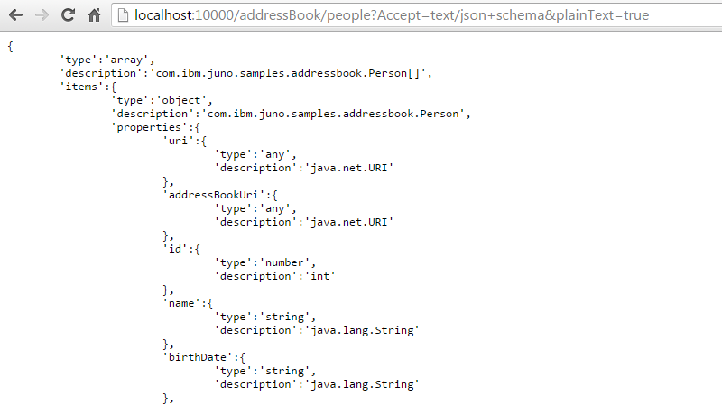
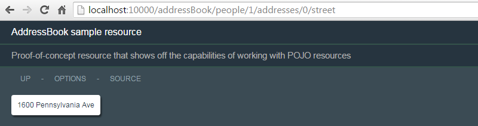
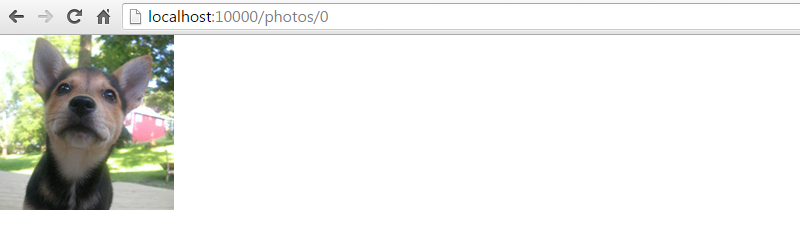

Juno Cloud API Overview
A generalized toolkit for converting POJOs to and from a variety of content types (JSON, XML, HTML, URLs, RDF/XML, N-Tuple, Turtle, N3, SOAP, Cognos, ATOM), and a REST toolkit for building up REST interfaces using simple POJOs.
Table of Contents
1 - Juno - What is it?
Juno started off as a simple library for serializing and parsing POJOs to and from JSON. Since then, it has expanded into serializing and parsing a variety of other content types. Later, entire REST client, server, and microservice APIs were developed that utilized the power of these serializers and parsers. Together, these features allow the construction of powerful REST interfaces wrapped around existing POJOs using very little code.
Features
-
Extensive and extensible support for a large variety of POJOs, including structured data (beans) and unstructured data (
Maps andCollections ). -
Support for serializing POJO models to:
- JSON (including variants)
- XML
- HTML
- URL-Encoding
- UON (URL-Encoded Object Notation)
- RDF/XML (including abbreviated)
- N-Triple
- Turtle
- N3
- SOAP/XML
-
Support for parsing the following into POJO models:
- JSON (including lax syntax, comments, concatenated strings)
- XML
- HTML
- URL-Encoding
- UON (URL-Encoded Object Notation)
- RDF/XML (including abbreviated)
- N-Triple
- Turtle
- N3
-
Data Transfer Objects for the following:
- ATOM
- Cognos
- JSON-Schema
DTOs can be used with any serializers and parsers.
-
Support for serializing POJO meta-models (specifically the POJO class structure itself) to:
- JSON-Schema
- XML-Schema
- HTML-Schema
-
Easy-to-understand naming conventions such as
ObjectMapandObjectListto represent genericMapsandLists. -
Serializers have many options for tweaking output (such as whitespace options, XML namespace options, strict/non-strict syntax options, and so forth).
-
JSON parser supports ALL valid JSON, such as:
- Javascript comments.
- Single or double quoted values.
- Quoted (strict) or unquoted (non-strict) attributes.
- JSON fragments (such as string, numeric, or boolean primitive values).
- Concatenated strings.
-
REST server interface that allows POJOs to be accessed through REST calls.
- Serialization and parsing layer is completely transparent to developer. Simply pass a POJO to the toolkit, and all serialization and parsing is taken care of.
- Extensible / customizable design. Ability to define support for additional content types, or to handle requests manually at many different levels.
- Default built-in support for serializing output to all supported languages.
- Default built-in support for parsing input from all supported languages.
- Ability to easily design self-documenting interfaces (specifically REST interfaces described entirely through OPTIONS requests).
- Ability to debug interface using nothing more than a browser, including the ability to specify any HTTP headers as GET parameters.
-
REST client interface that allows clients to parse POJOs from the REST server, typically in a single line of code.
-
No code generators required. Can be used against existing POJO models, unlike other APIs like Java Web Services.
-
Serializers/parsers require only Java 1.6+. (RDF support requires Jena 2.7.1+)
-
REST APIs require only Java 1.6+ and JEE 1.3+. (JAX/RS integration component requires JAX/RS provider)
-
All code is 100% IBM developer written cleanroom code.
-
Extensive and up-to-date Javadocs with color-coded code examples.
-
APIs use a Fluent Interface that allows complex tasks to be performed in a single line of code.
-
Code written for high-performance/high-concurrency/low-memory consumption.
Caching of POJO metadata speeds execution of serialization and parsing.
JSON parser is written using a state-machine architecture.
XML and HTML parsers are written using StAX.
POJOs are serialized/parsed directly from POJOs without a DOM layer, reducing object creation. -
A simple-to-use JAX-RS / Wink provider for using the existing Juno serializers and parsers in a JAX-RS environment.
-
An external INI-style configuration file API.
-
An API for defining REST resource microservices as simple executable jars.
Components
Juno consists of the following libraries:
juno.jar - Core library that contains the serializers, parsers, and bean map support.
Prereqs Java 1.6+.
This package can be used by itself if you only need to serialize or parse from any of the supported languages, or use the Bean Map support separately.
See the following subtopic Juno Core (juno.jar) for details on this library.
juno-server.jar - Contains the REST server APIs.
Prereqs Java 1.6+, JEE 1.3+.
This package can be used to create servlet-based REST interfaces.
See Juno Server (juno-server.jar) for details on this library.
juno-client.jar - Contains the REST client APIs.
Prereqs Java 1.6+.
This package can be used to easily communicate with Juno REST servlets.
See Juno Client (juno-client.jar) for details on this library.
juno-microservice.jar - An API for defining REST services as executable jars.
See Juno Microservices (juno-microservice.jar) for details on this package.
juno-all.jar - Combines all the jars above into a single library.
Typically, you want to simply pick up and use
The following zip files are also provided:
microservice-project.zip - Contains a template Eclipse project for quickly creating REST resources as executable jars.microservice-samples-project.zip - Contains sample code demonstrating various aspects of the Juno Cloud API.
These are discussed in detail in the Samples section.
Many of the examples below use beans with public field properties. While the toolkit allows for public bean properties, it's standard practice to use getters and setters for bean properties. However, the examples below use public fields simply to reduce their verbosity.
2 - Juno Core (juno.jar)
The Juno core library
- JSON
- XML
- HTML
- URL-Encoding
- UON
- RDF-XML
- RDF-XML-Abbrev
- Turtle
- N3
- N-Triple
- Plain text
- Cognos XML
2.1 - POJO Categories
The Juno serializers and parsers can handle a wide variety of POJOs.
The following chart shows POJOs categorized into groups and whether they can be serialized or parsed:
| Group | Description | Examples | Can serialize? | Can parse? |
|---|---|---|---|---|
| 1 | Java primitive objects |
|
yes | yes |
| 2 | Java Collections Framework objects and Java arrays | |||
| 2a |
With standard keys/values Map keys are group [1, 4a, 5] objects. Map, Collection, and array values are group [1, 2, 3a, 4a, 5] objects. |
|
yes | yes |
| 2b |
With non-standard keys/values Map keys are group [2, 3, 4b, 5, 6] objects. Map, Collection, and array values are group [3b, 4, 5, 6] objects. |
|
yes | no |
| 3 | Java Beans | |||
| 3a |
With standard properties These are beans that have no-arg constructors and one or more properties defined by public getter and setter methods or public fields. Property values are group [1, 2, 3a, 4a, 5] objects. |
yes | yes | |
| 3b |
With non-standard properties or not true beans These include true beans that have no-arg constructors and one or more properties defined by getter and setter methods or properties, but property types include group [3b, 4b, 5, 6] objects. This also includes classes that look like beans but aren't true beans. For example, classes that have getters but not setters, or classes without no-arg constructors. |
yes | no | |
| 4 |
Filtered objects These are objects that are not directly serializable, but have PojoFilters associated with them.
The purpose of an object filter is to convert an object to another object that is easier to serialize and parse.
For example, the DateFilter.ISO8601DT filter can be used to serialize Date objects
to ISO8601 strings, and parse them back into Date objects.
|
|||
| 4a |
2-way filtered to group [1, 2a, 3a] objects For example, a filter that converts a Date to a String.
|
yes | yes | |
| 4b |
1-way filtered to group [1, 2, 3] objects For example, a filter that converts an Iterator to a List.
This would be one way, since you cannot reconstruct an Iterator.
|
yes | no | |
| 5 |
Objects with standardized static T valueOf(String)/static T fromString(String) methods, or constructors with a String argument.During serialization, objects are converted to strings using the toString() method.
During parsing, strings are converted to objects using one of these static methods or constructors.
|
java.util.UUID |
yes | yes |
| 6 |
All other objects Anything that doesn't fall into one of the groups above are simply converted to Strings using the toString() method.
|
yes | no |
One other important note is that the serializers are designed to work on tree-shaped POJO models.
These are models where there are no referential loops (e.g. leaves with references to nodes, or nodes in one branch referencing nodes in another branch).
There is a serializer setting detectRecursions to look for and handle these kinds of loops (by setting these references to
2.2 - Serializers
The built-in serializers in Juno are fast and efficient, and are highly customizable, for example, allowing you to produce strict or non-strict syntax, various whitespace options, and automatic detection of recursions.
The serializers work by serializing POJOs directly to streams instead of using intermediate Document Object Model objects. This allows serialization with minimal memory use.
Default serialization support is provided for Java primitives,
Extensible support for other data types such as
In most cases, you can serialize objects in one line of code by using one of the default serializers:
In addition to the default serializers, customized serializers can be created using various built-in options:
Additional Information
- com.ibm.juno.core.serializer - Serializer API Javadoc
2.3 - Parsers
Parsers work by parsing input directly into POJOs instead of having to create intermediate Document Object Models. This allows them to parse input with minimal object creation.
The JSON parser can handle any valid JSON syntax (such as quoted or unquoted attributes, single or double quotes).
It can also handle JSON fragements and embedded Javascript comments.
The parsers can also be used to populating existing bean and collection objects:
Juno can parse both structured models (composed of serialized beans) and unstructured models (composed of generic maps, collections, primitives, and so on).
Any valid JSON can be parsed into an unstructured model consisting of generic ObjectMap and ObjectList objects.
Additional Information
- com.ibm.juno.core.parser - Parser API Javadoc
2.4 - ObjectMap and ObjectList
The ObjectMap and ObjectList classes are generic Java representations of JSON objects and arrays.
These classes can be used to create "unstructured" models for serialization (as opposed to "structured" models consisting of beans).
If you want to quickly generate JSON/XML/HTML from generic maps/collections, or parse JSON/XML/HTML into generic maps/collections, these objects work well.
These classes extend directly from JCF classes:
The
These object can be serialized in one of two ways:
- Using the provided
ObjectMap.serializeTo(java.io.Writer)orObjectList.serializeTo(java.io.Writer)methods. - Passing them to one of the
Serializerserialize methods.
As a general rule, if you do not specify a target type during parsing, or if the target type cannot be determined
through reflection, the parsers automatically generate
Additional Information
2.5 - Configurable Properties
Serializers and parsers have a wide variety of configurable properties that can be set on them.
For example, the following code shows how to set configurable properties on the JSON serializerclass:
JsonSerializer s =
Each of the serializers and parsers contain common reusable instances with common configuration properties.
For example, JSON has the following predefined reusable serializers and parsers:
These can be used directly, as follows:
Properties can be set using the following methods:
Serializer.setProperty(String,Object)- On any serializers.SerializerGroup.setProperty(String,Object)- On groups of serializers.Parser.setProperty(String,Object)- On any parsers.ParserGroup.setProperty(String,Object)- On groups of parsers.
The REST server API also provides various ways of setting properties:
@RestResource.properties()- Annotation on instances ofRestServlet.@RestMethod.properties()- Annotation on java methods in instances ofRestServlet.RestServlet.createSerializers()- Properties can be set programmatically on serializers by overriding this method.RestServlet.createParsers()- Properties can be set programmatically on parsers by overriding this method.
Similarly, the REST client API provides ways of setting properties:
RestClient.setProperty(String,Object)- Set property on the serializer and parser associated with a REST client.
The Serializer.lock() and Parser.lock()
methods can be used to make serializer and parser properties read only.
All the common reusable serializers and parsers are read only.
If you attempt to modify any properties on those instances, a LockedException is thrown.
Additional Information
BeanContextProperties- Properties associated with handling beans on serializers and parsers.SerializerProperties- Configurable properties common to all serializers.ParserProperties- Configurable properties common to all parsers.HtmlSerializerProperties- Configurable properties on the HTML serializer.HtmlDocSerializerProperties- Configurable properties on the HTML document serializer.HtmlParserProperties- Configurable properties on the HTML parser.RdfProperties- Configurable properties common to the RDF serializers and parsers.RdfSerializerProperties- Configurable properties on the RDF serializer.RdfParserProperties- Configurable properties on the RDF parsers.JsonSerializerProperties- Configurable properties on the JSON serializer.JsonParserProperties- Configurable properties on the JSON parser.SoapXmlSerializerProperties- Configurable properties on the SOAP/XML serializer.UonSerializerProperties- Configurable properties on the URL-Encoding and UON serializers.UonParserProperties- Configurable properties on the URL-Encoding and UON parsers.XmlSerializerProperties- Configurable properties on the XML serializer.XmlParserProperties- Configurable properties on the XML parser.RestServletProperties- Configurable properties on the REST servlet.
2.6 - Annotations
The com.ibm.juno.core.annotation package contains several annotations that can be applied to classes to alter how they're
handled by the serializers and parsers.
For example, the @Bean annotation can be used to limit which getters and setters get
interpreted as bean properties:
Additional Information
@Bean- Used to tailor how beans get interpreted by the framework.@BeanConstructor- Maps constructor arguments to property names on beans with read-only properties.@BeanIgnore- Ignore classes, fields, and methods from being interpreted as bean or bean components.@BeanProperty- Used to tailor how bean properties get interpreted by the framework.@Filter- Annotation that can be applied to a class to associate a filter with it.@NameProperty- Identifies a setter as a method for setting the name of a POJO as it's known by its parent object.@ParentProperty- Identifies a setter as a method for adding a parent reference to a child object.@URI- Used to identify a class or bean property as a URI.
2.7 - Filters
The programmatic equivalent to the annotations are the BeanFilter and
PojoFilter classes.
The following example is equivalent to specifying the
The PojoFilter class is a critical component of Juno that allows serializers and parsers to
be able to handle virtually any Java object.
Simply put, they can be thought of as 'transformers' that convert non-serializable objects to serializable objects and vice versa.
For example,
The filter above can then be associated with serializers and parsers as the following example shows:
Additional Information
- com.ibm.juno.core.filter - Filter API Javadocs.
- com.ibm.juno.core.filters - Predefined reusable filter classes.
2.8 - Configuration Files
The com.ibm.juno.core.ini package contains a powerful API for creating and using INI-style config files.
An example of an INI file:
This class can be used to easily access contents of this file, using the various capabilities of the ObjectMap class, as follows:
The interface also allows a config file to be easily constructed programmatically:
The following is equivalent, except that it uses ConfigFile.put(String, Object) to set values:
The the config file looks deceptively simple, the config file API is a very powerful feature with many capabilities, including:
- The ability to use variables to reference environment variables, system properties, other config file entries, and a host of other types.
- The ability to store and retrieve POJOs as JSON.
- APIs for updating, modifying, and saving configuration files without losing comments or formatting.
- Extensive listener APIs.
Examples
Additional Information
- com.ibm.juno.core.ini - Config API Javadocs.
2.9 - Supported Languages
Extensive javadocs exist for individual language support. Refer to these docs for language-specific information.
Additional Information
- com.ibm.juno.core.html - HTML support.
- com.ibm.juno.core.jena - RDF support.
- com.ibm.juno.core.jso - Java Serialized Object support.
- com.ibm.juno.core.json - JSON support.
- com.ibm.juno.core.plaintext - Plain-text support.
- com.ibm.juno.core.soap - SOAP support.
- com.ibm.juno.core.urlencoding - URL-Encoding and UON support.
- com.ibm.juno.core.xml - XML support.
- com.ibm.juno.core.dto.atom - ATOM support.
- com.ibm.juno.core.dto.cognos - Cognos support.
3 - Juno Server (juno-server.jar)
The Juno REST Server API provides a variety of servlet-based REST resource classes that provides REST interfaces on top of existing POJOs, allowing manipulation of those models using familiar GET, PUT, POST, and DELETE operations.
The API automatically detects
Automatic built-in support is provided for negotiation of response charsets and gzip encoding.
The following is an example of a REST API used to view and set JVM system properties.
The resource above is deployed like any other servlet, in this way:
One of the most useful aspects of using this API is the self-discovering, self-documenting OPTIONS pages that describe how to use the resource using labels pulled from the associated resource bundle:

Arbitrarily complex POJO models can be serialized using any of the supported serializers, and content can be parsed using any of the supported parsers.
The
The framework allows you to override header values through GET parameters, so that you can specify the
HTML

JSON

XML

Simple XML

URL-Encoding

UON

RDF/XML

RDF/N3

RDF/N-Tuple

RDF/Turtle

The Server API is an exhaustive topic on its own. Refer to the additional information for an in-depth examination of the API.
Additional Information
- com.ibm.juno.server - Juno Server API Javadocs.
4 - Juno Client (juno-client.jar)
The REST client API provides the ability to access remote REST interfaces and transparently convert the input and output to and from POJOs using any of the provided serializers and parsers.
Built upon the Apache HttpClient libraries, it extends that API and provides specialized APIs for working with REST interfaces while maintaining all the functionality available in the HttpClient API.
The Client API is also an exhaustive topic on its own. Refer to the additional information for an in-depth examination of the API.
Additional Information
- com.ibm.juno.client - Juno Client API Javadocs.
5 - Remoteable Services
Juno provides the capability of calling methods on POJOs on a server through client-side proxy interfaces. It offers a number of advantages over other similar remote proxy interfaces, such as being much simpler to use and allowing much more flexibility.
Remoteable Services are implemented through a combination of the Server and Client libraries.
- Proxy interfaces are retrieved using the
RestClient.getRemoteableProxy(Class)method. - The
RestClient.setRemoteableServletUri(String)method is used to specify the location of the remoteable services servlet running on the server. - The
RemoteableServletclass is a specialized subclass ofRestServletthat provides a full-blown REST interface for calling interfaces remotely.
In this example, you have the following interface defined that you want to call from the client side against a POJO on the server side (i.e. a Remoteable Service):
The client side code for invoking this method is shown below:
The requirements for a method to be callable through a remoteable service are:
- The method must be public.
- The parameter and return types must be serializable and parsable.
One significant feature is that the remoteable services servlet is a full-blown REST interface. Therefore, in cases where the interface classes are not available on the client side, the same method calls can be made through pure REST calls. This can also aid significantly in debugging, since calls to the remoteable service can be made directly from a browser with no coding involved.
Additional Information
- com.ibm.juno.server.remoteable - Juno Remoteable API Javadocs.
6 - Microservices
The
java -jar microservice.jar
When you execute this command, you can point your browser to

Microservices combine all the functionality of the core, server, and client APIs to provide truly powerful and easy-to-use REST interfaces with minimal overhead.
Additional Information
- com.ibm.juno.microservice - Juno Microservice API Javadocs.
7 - Samples
The
This project is packaged as a Juno Microservice project that allows REST resources to be started using embedded Jetty.
7.1 - Installing in Eclipse
Follow these instructions to create the Samples project in Eclipse:
- Download the latest microservice-samples-project .zip file (e.g.
microservice-samples-project-5.2.zip ). - In your Eclipse workspace, go to File->Import->General->Existing Projects into Workspace and click Next.

- Select the .zip file and click Finish.

- In your workspace, you can now see the following project:

The important elements in this project are:
META-INF/MANIFEST.MF - The manifest file.
This defines the entry point, classpath, top-level REST resources, and location of external configuration file.
Manifest-Version :1.0 Main-Class :com.ibm.juno.microservice.RestMicroservice Rest-Resources :com.ibm.juno.server.samples.RootResources Main-ConfigFile :samples.cfg Class-Path :lib/commons-codec-1.9.jar lib/commons-io-1.2.jar lib/commons-logging-1.1.1.jar lib/httpclient-4.5.jar lib/httpcore-4.4.1.jar lib/httpmime-4.5.jar lib/javax.servlet-api-3.0.jar lib/jetty-all-8.1.0.jar lib/juno-all-5.2.jar lib/org.apache.commons.fileupload_1.3.1.jar lib/derby.jar lib/jena-core-2.7.1.jar lib/jena-iri-0.9.2.jar lib/log4j-1.2.16.jar lib/slf4j-api-1.6.4.jar lib/slf4j-log4j12-1.6.4.jar RestMicroservice.java - The application class.
This is a specialized microservice in Juno for exposing REST servlets.
Allows REST servlets to be registered in the manifest or configuration file.RootResources.java - The top-level REST resource.
This class serves as a "router" page to child resources:
samples.cfg - The external configuration file.
A deceptively simple yet powerful INI-style configuration file:
#================================================================================ # Basic configuration file for SaaS microservices # Subprojects can use this as a starting point. #================================================================================ #================================================================================ # REST settings #================================================================================ [REST] # The HTTP port number to use. # Default is Rest-Port setting in manifest file, or 8000. port =10000 ...
At this point you're ready to start the microservice from your workspace.
7.2 - Running in Eclipse
The
Go to Run->Run Configurations->Java Application->microservice-samples.project and click Run.

In your console view, you can see the following output:

Now open your browser and point to

You have now started a REST interface on port 10000.
7.3 - Building and Running from Command-Line
The
To build the Samples microservice, right-click

If you open up a command prompt in the

If you get an error message saying java.net.BindException: Address already in use, this means that the microservice
is already running elsewhere, so it cannot bind to port 10000.
7.4 - MANIFEST.MF
The
Notes
- The
Main-Class entry is just the standard manifest entry describing the entry point for the executable jar. Thecom.ibm.juno.microservice.RestMicroservice class is the standard microservice class for REST microservices. Other kinds of microservices can be created by extending theMicroserviceclass. - The
Rest-Resources entry is a comma-delimited list of REST resources. These are classes that subclass fromRestServlet. This is a specialized entry used bycom.ibm.juno.microservice.RestMicroservice . In this case, you're pointing to a resource defined in our project,com.ibm.juno.samples.RootResources , which serves as a "grouping" page for several other REST resources. - The
Main-ConfigFile entry points to the location of an external configuration file for our microservice. - The
Class-Path entry again is just the standard manifest file entry. However, if you need to add extra libraries to your microservice, you'll need to copy them into yourlib directory and add them to the classpath here.
If you modify the manifest file and get
7.5 - RootResources
The
The class hierarchy for this class is:
com.ibm.juno.server.RestServlet
Contains all the REST servlet logic.com.ibm.juno.server.RestServletDefault
Defines default serializers and parsers, and OPTIONs page logic.com.ibm.juno.server.RestServletGroupDefault
Specialized subclass for grouping other resourcescom.ibm.juno.microservice.ResourceGroup
Specialized subclass when using the Microservice API.com.ibm.juno.server.samples.RootResources
Pointing a browser to the resource shows the following:
The
The
RootResources.java
The resource bundle contains the localized strings for the resource:
RootResources.properties
The RestServlet.getLabel(RestRequest) and RestServlet.getDescription(RestRequest) methods.
The
Child resources must also be subclasses of RestServlet, and
must specify a RestResource.path() annotation to
identify the subpath of the child.
For example, the
HelloWorldResource.java
It should be noted that child resources do not need to be defined this way.
They could also be defined as servlets in the same way as the root resource.
The RestServlet.createChildren() method.
Note that these router pages can be arbitrarily nested deep. You can define many levels of router pages for arbitrarily hierarchical REST interfaces.
Let's step back and describe what's going on here:
During servlet initialization of the
7.6 - HelloWorldResource
The
HelloWorldResource.java
HelloWorldResource.properties
The class hierarchy for this class is:
com.ibm.juno.server.RestServlet
Contains all the REST servlet logic.com.ibm.juno.server.RestServletDefault
Defines default serializers and parsers, and OPTIONs page logic.com.ibm.juno.microservice.Resource
Specialized subclass when using the Microservice API.com.ibm.juno.server.samples.HelloWorldResource
Pointing a browser to the resource shows the following:

Using the special

Clicking the OPTIONS link on the page shows the OPTIONS for this resource.
Note how the

7.7 - MethodExampleResource
The
- Using the
Redirectobject to perform redirections. - Using the various Java method parameter annotations to retrieve request attributes, parameters, etc.
- Using the annotation programmatic equivalents on the
RestRequestobject. - Setting response POJOs by either returning them or using the
RestResponse.setOutput(Object)method.
The resource is provided to show how various HTTP entities (e.g. parameters, headers) can be accessed
as either annotated Java parameters, or through methods on the
MethodExampleResource.java
The class consists of 3 methods:
doGetExample()
The root page.
Performs a simple redirection to thedoGetExample1() method using aRedirectobject.doGetExample1()
Shows how to use the following annotations: Method returns a POJO to be serialized as the output.doGetExample2()
Identical todoGetExample1() but shows how to use theRestRequestandRestResponseobjects:RestRequest.getAttribute(String,Class)RestRequest.getParameter(String,Class)RestRequest.getHeader(String,Class)RestRequest.getMethod()RestRequest.getPathRemainder()
RestResponse.setOutput(Object)method.
There's a lot going on in this method. Notice how you're able to access URL attributes, parameters, headers, and content as parsed POJOs. All the input parsing is already done by the toolkit. You simply work with the resulting POJOs.
As you might notice, using annotations typically results in fewer lines of code and are therefore usually preferred over the API approach, but both are equally valid.
When you visit this page through the router page, you can see the following (after the automatic redirection occurs):

Notice how the conversion to POJOs is automatically done for us, even for non-standard POJOs such as UUID.
Self-documenting design through OPTIONS pages
One of the main features of Juno is that it produces OPTIONS pages for self-documenting designs (i.e. REST interfaces that document themselves).
To facilitate this, the ResourceOptions class is provided.
It inspects a
To define an OPTIONS request handler, the RestServletDefault class defines the following Java method:
RestServletDefault.java
The HtmlDocSerializer class
and specified on the resource class annotation:
This simply creates a link that's the same URL as the resource URL appended with
Metadata about the servlet class is combined with localized strings from a properties file associated
through a
MethodExampleResource.properties
Clicking the

This page (like any other) can also be rendered in JSON or XML by using the
7.8 - UrlEncodedFormResource
The
- How to use form entry beans to process form POSTs.
- How to use the
RestRequest.getReaderResource(String)method to serve up static files with embedded string variables.
The class is shown below:
UrlEncodedFormResource.java
The RestRequest.getReaderResource(String,boolean) method pulls in the following
file located in the same package as the class:
UrlEncodedForm.html
The
UrlEncodedFormResource.properties
The RestRequest.getServletLabel() and RestRequest.getServletDescription().
Pointing a browser to the resource shows the following:

Entering some values and clicking

Additional Information
RestServlet.createVarResolver()- Servlet-level variables.RestServlet.createRequestVarResolver(RestRequest)- Request-level variables.
7.9 - RequestEchoResource
The
It provides examples of the following:
- Using the
@RestResource.properties()annotation to set serializer properties. - Using the
@RestResource.filters()annotation to set serializer filters. - Using the
@Propertiesannotation to set serializers properties programmatically on a request.
The class is shown below:
RequestEchoResource.java
Again, there's a lot going on here that's new that requires some explanation.
The
The @RestResource.properties() and
@RestResopurce.filters() annotations are used
to set behavior properties on the resource's underlying bean context, serializers, and parsers.
You're using them here to modify the behavior of serialization for all content types.
The annotations are functionally equivalent to overriding the RestServlet.createSerializers() method, as follows:
Hypothetical RequestEchoResource.createSerializers() method
Note how the annotations generally require fewer lines of code.
Pointing a browser to the resource shows the following:

This gives you an idea of what kinds of POJO models can be serialized, since you are serializing a regular old
7.10 - AddressBookResource
The
- How to create RESTful interfaces using only POJOs.
- How to use the
@Xmland@XmlSchemaannotations to provide XML namespaces and alter how beans are handled by the XML serializer. - How to use the
@Rdfand@RdfSchemaannotations to provide XML namespaces and alter how beans are handled by the Jena serializers. - How to use the
@BeanPropertyannotation to alter how bean properties are handled by the serializers. - How to use the
RestMethod.name()annotation to create overloaded methods beyond the standard GET/PUT/POST/DELETE. - How to augment data in the OPTIONS page.
- How to use the
RestClientAPI to interact with the REST resource using the same POJOs used to create the server-side API. - How to interact with the REST resource using only a browser.
- Using the
Traversableconverter to drill down into POJO models. - Using the
Queryableconverter to provide search/view/sort functionality against POJOs. - Using the
Introspectableconverter to invoke methods on POJOs. - Using proxy interfaces.
Pointing a browser to the resource shows the following:

If you click the

7.10.1 - Classes
The code is straightforward, consisting of the following classes:
package-info.java - Used to define XML namespaces for POJOs in this package.IAddressBook - An interface describing the address book.AddressBook - A data structure consisting of a list ofPersons.Person, Address - In-memory representations of people and addresses.CreatePerson, CreateAddress - POJOs for creating and updating people and address through the REST interface.AddressBookResource - The REST resource class.
For the sake of brevity, bean properties are defined as public fields instead of the normal getters/setters. Also, the examples are not the most efficient design and are not thread safe.
The
package-info.java
Our address book uses the following interface:
IAddressBook.java
Notes
- You interface an interface for our address book so that you can later use it to demonstrate the proxy interface support.
The
AddressBook.java
Notes
- The
@Xml (elementName="addressBook" )<addressBook> . Without this annotation, the element would revert to the generalized<array> tag. - The separate constructors are implementation specific and are needed because you're going to be using this class in two ways,
since you'll be demonstrating the client code as well as the server code, and it eliminates having to define separate client-side and server-side POJOs:
- The normal constructor is used to programmatically create this object in the REST servlet code.
- The no-arg constructor is used by the Juno parsers to construct this object in our client side code.
The
Person.java
Notes
- The
ns="per" annotations override the default"ab" namespace defined on the package. It applies to this class and all properties of this class. - The
@BeanProperty (uri=true )uri property as the resource URI for this resource. This property has special meaning for the XML and RDF serializizers. The XML serializer serializes this as auri attribute instead of an<uri> element, and the RDF serializer uses this property for the value of therdf:resource attribute. - The
@BeanProperty (filter=CalendarFilter.Medium.class )"MM dd, yyyy" . This could have also been specified globally on the resource level through theRestResource.properties()annotation.
The
Address.java
Notes
- This class shows how the namespace can be overridden at the property level through the
@Xml (ns="mail" )
The
CreatePerson.java
The
CreateAddress.java
The
AddressBookResource.java
Notes
- The
@RestResource.messages() annotation identifiescom/ibm/sample/addressbook/nls/AddressBookResource.properties as the resource bundle for localized message for this class. - You are setting
XML_enableNamespaces totrue to enable XML namespaces. By default, XML namespace support is disabled perXmlSerializerProperties.XML_enableNamespaces, so you have to explicitly enable it on our serializers. - The
XML_autoDetectNamespaces setting is needed to get the XML serializer to addxmlns attributes to the root elements. This causes the XML serializer to scan the POJO objects for namespaces in order to populate the root element. There are other ways to do this, such as explicitely specifying theXML_defaultNamespaceUris setting at either the resource or method level, which might be preferred in high-performance environments. However,XML_autoDetectNamespaces produces the simplest code for our example. - The
updatePerson() andupdateAddress() methods use a guard to only allow administrators access. For the sample code, the guard does nothing. It's up to the implementer to decide how to restrict access. - The
updatePerson() andupdateAddress() methods use thePojoRestclass to locate and update individual nodes in a POJO tree using the path remainder on the request. - The
doInit() method shows an example of an overloaded method using the@RestMethod(name="INIT") annotation. - The
getOptions() method shows the default OPTIONS page augmented with some additional information.
The OPTIONS page uses the servlet resource bundle to specify the labels so that they're globalizable.
AddressBookResource.properties
7.10.2 - Demo
Pointing a browser to the resource shows the results of running the

Clicking the

Notice how the
Also notice how the dates are formatted as readable strings.
This was from the filter you added to the
Let's see what the output looks like in other formats:
JSON

Lax JSON

XML

Notice how our
Also notice how the
RDF/XML

Notice how the
Also notice how
Now lets look at the schema outputs that can be rendered that show information about the POJO classes themselves.
HTML Schema

JSON Schema
XML Schema

Now let's see what else you can do.
Clicking on the first

7.10.3 - Traversable
Because you added the

7.10.4 - Queryable
The
Show only the name and addresses columns

Show only names that start with 'B*'

Show only entries with age greater than 60

7.10.5 - Introspectable
The

7.10.6 - ClientTest
The
You'll notice that the class is a standalone executable that can be invoked as a plain Java process.
ClientTest.java
The output from running this code is the following:
Running client test... Number of entries = 2 Deleted person Barack Obama, response = DELETE successful Deleted person George Walker Bush, response = DELETE successful Number of entries = 0 Created person Barack Obama, uri = http://localhost:9081/sample/addressBook/people/3 Created person George Walker Bush, uri = http://localhost:9081/sample/addressBook/people/4 Created address http://localhost:9081/sample/addressBook/addresses/7 Created address http://localhost:9081/sample/addressBook/addresses/8 Changed name, response = PUT successful New name = Barack Hussein Obama
7.10.7 - Browser Tips
The Juno architecture is designed to make it easy to debug REST resources using nothing more than a browser. The same actions done programmatically in the last section can also be done using URLs. By default, you can override the HTTP Method and Content through GET parameters, as shown below:
The ability to overload methods is enabled through the RestServletProperties.REST_allowMethodParam property.
7.11 - SampleRemoteableServlet
The
- Extending the
RemoteableServletclass to create a proxy service. - Using the
RestClientclass to create remoteable proxy interfaces.
The RemoteableServlet.getServiceMap(),
that defines interface keys and POJO values.
The
Pointing a browser to the resource shows the following:

Clicking the hyperlinks on each shows you the list of methods that can be invoked on that service.
Note that the


As good practice, you'll want to use interfaces to prevent all public methods from being exposed.
The RestClient.setRemoteableServletUri(String) method is used to specify the location
of the remoteable services servlet running on the server.
Proxy interfaces are then retrieved using the RestClient.getRemoteableProxy(Class) method.
The client side code for invoking this method is shown below:
Additional Information
7.12 - TempDirResource
The
- Extending the
DirectoryResourceclass. - Using the Apache
ServletFileUpload class to handle multi-part form posts. - Using a system property string variable.
- Using
RestMatchers.
Pointing a browser to the resource shows the following:

Pointing a browser to the

TempDirResource.java
TempDirResource.properties
Note how a system property variable can be defined in the properties file.
TempDirUploadPage.html
Note how the HTML file contains localized variables for the servlet label and description.
Additional Information
7.13 - AtomFeedResource
The
- Using the ATOM Feed DTO API.
Pointing a browser to the resource shows the following:

True ATOM feeds require using an
Other languages, such as JSON are also supported:

AtomFeedResource.java
Additional Information
- com.ibm.juno.core.dto.atom - ATOM Feed DTO Javadocs.
7.14 - DockerRegistryResource
The
- Accessing a docker registry REST API as POJOs using
RestClient. - Using the
ResourceDescriptionclass to implement a top-level 'router' page. - Using the
RestServlet.getConfig()method to access external configuration file values.
Pointing a browser to the resource shows the following:

Clicking the

DockerRegistryResource.java
The Docker registry URL is specified in the
samples.cfg
Additional Information
7.15 - TumblrParserResource
The
- Using
RestClientto retrieve information from other REST resources. - Using
ObjectMapandObjectListto produce generalized POJO models.
Pointing a browser at a Tumblr blog name, such as

TumblrParserResource.java
7.16 - PhotosResource
The
- How to define custom serializers and parsers at the method level. In this case, you define a serializer and parser to handle images.
The resource consists of a simple registry of images with integer IDs.

It is initialized with a single entry, which can be accessed through a GET request.
PhotosResource.java
7.17 - JsonSchemaResource
The
- Using the JSON Schema DTO API.
The resource consists of a pre-initialized Schema object.
Pointing a browser to the resource shows the following:

For true JSON-Schema, you need to specify the header
JsonSchemaResource.java
7.18 - SqlQueryResource
The
- Using the
ResultSetListto serialize database result sets. - Using
RestServlet.getConfig()to access config properties. - Using form entry beans.
The example uses embedded Derby to create a database whose name is defined in the external configuration files.
Pointing a browser to the resource shows the following:

Running a query results in the following output:

SqlQueryResource.java
SqlQueryResource.html
samples.cfg
7.19 - ConfigResource
The ConfigResource class is a reusable resource
defined in the com.ibm.juno.microservice API.
It provides a REST interface for reading and altering the microservice config file.
Pointing a browser to the resource shows the following:

The OPTIONS page shows the REST methods available to alter the config files:

An edit page is provided for altering the raw config file:

The ConfigFile class is a serializable POJO, which makes the resource
relatively straighforward to implement.
ConfigResource.java
ConfigEdit.html
7.20 - LogsResource
The LogsResource class is a reusable resource
defined in the com.ibm.juno.microservice API.
It provides a REST interface for the log files generated by the microservice.
Pointing a browser to the resource shows the following:

The

The

8 - Cookbook Examples
8.1 - Core API
TODO topics
- Creating generic JSON objects
- Defining XML namespaces
8.2 - Server API
8.2.1 - Apply a filter that changes the format of doubles
The RestResource.filters() annotation can be used to add
POJO filters to all the serializers and parsers registered with a servlet.
In this example, you define a POJO filter that converts doubles to localized-format strings using
the
8.2.2 - Apply filters to a subset of serializers or parsers
The RestServlet.createSerializers() and RestServlet.createParsers()
methods are the servlet methods that get called during servlet initialization to create the serializer and
parser groups.
These methods can be overridden to customize individual serializers and parsers in a way that can't be done using annotations.
In this example, you want to apply the filter from the previous example to change the rendered format for doubles. However, in this case, you apply the filter to only the HTML serializer.
TODO topics
- Packaging as WAR files
- Customizing OPTIONS pages
- Rendering form entry pages
- Using the ZipFileList response handler
- Implementing console-output pages in HTML
- Using configuration files
- Making a bean traversable
- Using the Queryable converter
- Sending raw output
- Retrieving raw input
- Accessing request query parameters
- Accessing request path variables
- Accessing request content
- Accessing request header values
- Accessing the path pattern remainder
- Creating ResourceGroup pages
- Using matchers to define multiple Java methods to the same path pattern
- Using the Remoteable API
- Sending a redirect request
- Changing the stylesheet used by the HTML serializer
- Using the Introspector API to invoke methods on Java objects through REST calls
- Customizing serializers and parsers at the method level
- Accessing config file values
- Accessing request query parameters on URL-Encoded FORM posts without triggering HTML body to be read
- Accessing localized messages
- Defining your own response handlers
- Guarding access to a servlet or method
- Handling servlet initialization errors
- Handling exceptions that occur during response processing
- Customizing logging
- Creating an ATOM feed
- Creating a REST API against a file system
- Creating a Docker REST API
- Creating a REST API for storing and retrieving images
- Creating a REST API for echoing requests
- Creating a Tumblr REST API
- Creating a Cloudant REST API
- Using onPreCall() to intercept requests before processing
- Using onPostCall() to intercept requests after processing
- Creating child resources programmatically
- Defining default request headers
- Defining default response headers
- Defining your own var-resolver variables
- Serving up static files inside the /htdocs embedded package
- Defining MIME types of files in the /htdocs folder using the createMimitypesFileTypeMap() method
- Defining the title and description of a servlet programmatically using getDescription() and getTitle().
- Setting properties programmatically using RestServlet.setProperty()
- Setting and saving config file properties
- Defining your own abstract subclass of RestServlet or RestServletDefault
- Adding GZip support
- Accessing environment variables in config files
8.3 - Client API
8.4 - Microservice API
9 - Best Practices
- Reuse instances of serializers and parsers whenever possible.
They are designed to be thread safe, and maintain internal caches of bean metadata to increase performance.
- The
SERIALIZER_detectRecursionsoption on theSerializerclass can cause a performance penalty of around 20%. Therefore, it's recommended that this option be used only when necessary.
- In general, JSON serialization and parsing is about 20% faster than XML. JSON is also more compact than XML.
- The
Parsermethods that take inClassMetaparameters are slightly faster than methods that take inClassorObjectparameters, since the latter methods involve hash lookups to resolve toClassMetaparameters.
10 - Important Document Links
All up-to-date Juno documentation is stored in Javadocs, especially package-level Javadocs. This index provides links to the best jumping-off points for documentation.
Links
Juno Overview - This document
com.ibm.juno.core - Core Architecture
com.ibm.juno.core.json - JSON support
com.ibm.juno.core.xml - XML support
com.ibm.juno.core.jena - RDF languages support
com.ibm.juno.core.urlencoding - URL-Encoding support
com.ibm.juno.core.dto.atom - ATOM support
com.ibm.juno.core.dto.cognos - Cognos support
com.ibm.juno.core.ini - Configuration File API
com.ibm.juno.server - REST Server API
com.ibm.juno.server.jaxrs - JAX-RS Integration
com.ibm.juno.client - REST Client API
com.ibm.juno.microservice - REST Microservice API
11 - Release Notes
What's new in each release
5.2.0.1 (Mar 23, 2016)
Juno 5.2.0.1 is a moderate update.
com.ibm.team.juno
- Improved support for multi-line values in config files. Any line that begins with whitespace is interpreted as a continuation of the previous line.
- Support for
'\uXXXX' character sequences in config files. - Fixed issue in
XmlSerializerwhere'\r' and'\n' characters were not being handled per XML specs. - New methods on
ObjectList: - New methods on
ObjectMap: - New
@ThreadSafeannotation. - New
ClassFilterclass. - New
ConfigFile.getResolving(StringVarResolver,boolean)method. - New
ConfigFile.getStringVar()method. - New
ParserProperties.PARSER_trimStringsproperty. - New
SerializerProperties.SERIALIZER_trimStringsproperty. - New
Args.getStringVar()method. - New
ManifestFileclass - New
MessageBundleclass. ReplacesSafeResourceBundle /SafeResourceMultiBundle /RestNls . - New
StringMapVarclass. - New
StringVarsclass with reusable commonStringVarinstances. - New
JunoLoggerclass. - Default value for
XmlParserProperties.XML_trimWhitespacechanged totrue .
com.ibm.team.juno.server
- New methods on
RestServlet:
com.ibm.team.juno.client
- Fixed potential issue in
RestClientwhere the HTTP connection pool could end up exhausted if an error occurred. - Improved thread safety on
RestClient. - New warning message is logged if a
RestClientis garbage collected without being closed:"WARNING: RestClient garbage collected before it was finalized."
5.2.0.0 (Dec 30, 2015)
Juno 5.2.0.0 is a major update. Major changes have been made to the microservice architecture and config INI file APIs.
com.ibm.team.juno
- Significant changes and enhancements to the
com.ibm.juno.core.iniAPI.- More consistent handling of comma-delimited lists of objects.
- New methods in
ConfigFile:ConfigFile.getStringArray(String),ConfigFile.getStringArray(String,String[])ConfigFile.getSectionAsBean(String,Class)- Instantiate a new bean with property values in the specfied section..ConfigFile.writeProperties(String,Object,boolean,Class[])- Copy the properties in a config file section into properties on an existing bean or POJO.ConfigFile.getSectionMap(String)- Get all the resolved values in a section.ConfigFile.containsNonEmptyValue(String)ConfigFile.isEncoded(String)ConfigFile.addListener(ConfigFileListener)- Listen for modification events on the config file.ConfigFile.merge(ConfigFile)- Merge the contents of another config file into this config file.ConfigFile.getResolving(),ConfigFile.getResolving(StringVarResolver)- Return an instance of the config file that resolves string variables. Much more efficient than the previous design since the same underlying config file object is shared.ConfigFile.toWritable()- Wraps the config file in aWritableinterface so that it can be serialized by the REST interface as a plain-text INI file instead of as a serialized POJO.ConfigFile.getInt(String)- Now supports"M" and"K" to identify millions and thousands.
- New methods in
ConfigMgr: - New methods in
Section:Section.setParent(ConfigFileImpl)- Used by parsers to set the config file for this section.Section.setName(String)- Used by parsers to set the name for this section.
- New interfaces:
Encodermethods have access to field names to use them as salt values.- The name of the default section is now
"default" . Before it was justnull . XorEncoderXOR key can be overridden through the"com.ibm.juno.core.ini.XorEncoder.key" system property.
- Support for converting Strings to POJOs if the POJO class has any of the following static methods:
fromString(String)valueOf(String)(e.g. enums)parse(String)(e.g. loggingLevelclass)parseString(String)forName(String)(e.g.ClassandCharsetclasses)
- Support for parsing into objects with unbound type variables.
For example, if you have a class
Pair<S,T>and you try to parse into this class (e.g.parser.parse(in, Pair.), the unbound type variables is interpreted asclass )Objectinstead of throwing an exception. - Support for serializing/parsing the following new types:
AtomicIntegerAtomicLongBigIntegerBigDecimal
- Parsers have been enhanced to allow parent POJOs and field names to be passed into child POJOs.
New
@NamePropertyand@ParentPropertyannotations are provided for identifying methods for setting names and parent POJOs on child POJOs. For example, the config fileSectionclass represents a section in a config file. It needs to know it's own name and have a link to theConfigFilethat it belongs to. With these new annotations, config files can be reconstructed using any of the parsers. - New classes and interfaces:
Streamableinterface for identifying objects that can be serialized directly to an output stream.Writableinterface for identifying objects that can be serialized directly to a writer.StringObjectclass that can be used for delayed object serialization.ByteArrayCacheByteArrayInOutStreamFileUtilsThrowableUtilsStringVarMultipartStringVarWithDefault
- New fields on
ObjectList: - New fields and methods on
ObjectMap: - New methods in
ArrayUtils: - New methods in
IOUtils: - New methods on
PojoRest:PojoRest.get(Class,String,Object)PojoRest.getString(String)PojoRest.getString(String,String)PojoRest.getInt(String)PojoRest.getInt(String,Integer)PojoRest.getLong(String)PojoRest.getLong(String,Long)PojoRest.getBoolean(String)PojoRest.getBoolean(String,Boolean)PojoRest.getMap(String)PojoRest.getMap(String,Map)PojoRest.getList(String)PojoRest.getList(String,List)PojoRest.getObjectMap(String)PojoRest.getObjectMap(String,ObjectMap)PojoRest.getObjectList(String)PojoRest.getObjectList(String,ObjectList)
- New methods on
ProcBuilder: - New methods on
StringUtils:StringUtils.isEmpty(Object)StringUtils.nullIfEmpty(String)StringUtils.base64EncodeToString(String)StringUtils.base64Encode(byte[])StringUtils.base64DecodeToString(String)StringUtils.base64Decode(String)StringUtils.generateUUID(int)StringUtils.trim(String)StringUtils.parseISO8601Date(String)StringUtils.replaceVars(String,Map)StringUtils.pathStartsWith(String,String)StringUtils.pathStartsWith(String,String[])
- New
StringVar.doResolve(String)method. - New
StringVarResolver.DEFAULTfield. - Eliminated dependency on
javax.mail.internet.MimeUtilityby implementing our ownStringUtils.base64Encode(byte[])method. CalendarFilterandDateFilterclasses now handle blank input better. Returnsnull instead of throwing an exception.HtmlDocSerializerspecifies the default CSS location as/servletPath/style.cssinstead of/servletPath/htdocs/juno.css. This coincides with enhancements made in the server code for specifying styles.HtmlDocSerializerwraps output in two div tags instead of one (e.g.<div class='outerdata'><div class='data' id='data'>...</div></div>). Needed for supporting the new devops look-and-feel.- Fixed indentation inconsistencies in
HtmlDocSerializer. - Renamed
HtmlSchemaSerializerHtmlSchemaDocSerializer. - RDF serializers and parsers now support
loose collections. - RDF parser handles case where resources point to themselves (an unfortunate behavior in JFS RDF documents).
- JSON parser with throw an exception in strict mode if it encounters numbers that are valid in Java but invalid in JSON (e.g. octal, hexadecimal numbers).
Parsermethods now check fornull input.SerializerGroupandParserGroupignores serializers and parsers if they throwNoClassDefFoundErrors.UrlEncodingParsercreates lists if the same attribute name is encountered more than once. Before it would just replace the previous value with the new value.- New
UrlEncodingSerializer.DEFAULT_SIMPLE_EXPANDEDserializer. - Changes to
Args:getMainArg(int)changed toArgs.getArg(int). Non-existent arguments are returned asnull instead of blank strings. This is more inline with the behavior of the rest of the library.- New
Args.hasArg(int)method.
- Removed
com.ibm.juno.core.utils.CharsetUtilsclass. - Removed
com.ibm.juno.core.utils.ConcurrentIdentityListclass. - Fixed bug in
MultiIterableclass. PojoIntrospectormust now be instantiated with aReaderParser. Simplifies the API on the class.PojoRestmust now be instantiated with aReaderParser. Simplifies the API on the class.MessageBundleandcom.ibm.juno.core.utils.SafeResourceMultiBundlemoved from server component.- Several bug fixes and performance improvements in
StringVarResolver. - Various enhancements to
TeeWriterandTeeOutputStream. - Renamed
CharSetAsciiSet. SerializerGroupandParserGroupnow ignoresNoClassDefFoundErrorsso that resources that include Jena support can continue to operate even if the Jena libraries are not present.- New
FileUtils.createTempFile(String)method. - New
PojoQuerymodified to handle bean getters that throw exceptions.
com.ibm.team.juno.client
- Upgraded to use Apache HttpClient 4.5.
- New classes:
- Removed
com.ibm.juno.client.LaxRedirectStrategy. Use HTTP Client equivalent. - New methods on
RestCall:RestCall.addInterceptor(RestCallInterceptor)RestCall.pipeTo(Writer)RestCall.pipeTo(Writer,boolean)RestCall.pipeTo(String,Writer,boolean)RestCall.getWriter(String)RestCall.pipeTo(OutputStream)RestCall.pipeTo(OutputStream,boolean)RestCall.pipeTo(String,OutputStream,boolean)RestCall.getOutputStream(String)RestCall.byLines()RestCall.captureResponse()RestCall.successPattern(String)RestCall.failurePattern(String)RestCall.addResponsePattern(ResponsePattern)RestCall.run()- Renamed fromexecute().RestCall.getCapturedResponse()RestCall.getResponsePojoRest(Class)RestCall.getResponsePojoRest()RestCall.logTo(Level,Logger)RestCall.setConfig(RequestConfig)
- New lifecycle listener methods on
RestCallInterceptor: - New methods on
RestClient: - New passthrough methods on
RestClientdefined onHttpClientBuilder:RestClient.setRedirectStrategy(RedirectStrategy)RestClient.setDefaultCookieSpecRegistry(Lookup)RestClient.setRequestExecutor(HttpRequestExecutor)RestClient.setSSLHostnameVerifier(HostnameVerifier)RestClient.setPublicSuffixMatcher(PublicSuffixMatcher)RestClient.setSSLContext(SSLContext)RestClient.setSSLSocketFactory(LayeredConnectionSocketFactory)RestClient.setMaxConnTotal(int)RestClient.setMaxConnPerRoute(int)RestClient.setDefaultSocketConfig(SocketConfig)RestClient.setDefaultConnectionConfig(ConnectionConfig)RestClient.setConnectionTimeToLive(long,TimeUnit)RestClient.setConnectionManager(HttpClientConnectionManager)RestClient.setConnectionManagerShared(boolean)RestClient.setConnectionReuseStrategy(ConnectionReuseStrategy)RestClient.setKeepAliveStrategy(ConnectionKeepAliveStrategy)RestClient.setTargetAuthenticationStrategy(AuthenticationStrategy)RestClient.setProxyAuthenticationStrategy(AuthenticationStrategy)RestClient.setUserTokenHandler(UserTokenHandler)RestClient.disableConnectionState()RestClient.setSchemePortResolver(SchemePortResolver)RestClient.setUserAgent(String userAgent)RestClient.setDefaultHeaders(Collection)RestClient.addInterceptorFirst(HttpResponseInterceptor)RestClient.addInterceptorLast(HttpResponseInterceptor)RestClient.addInterceptorFirst(HttpRequestInterceptor)RestClient.addInterceptorLast(HttpRequestInterceptor)RestClient.disableCookieManagement()RestClient.disableContentCompression()RestClient.disableAuthCaching()RestClient.setHttpProcessor(HttpProcessor)RestClient.setRetryHandler(HttpRequestRetryHandler)RestClient.disableAutomaticRetries()RestClient.setProxy(HttpHost)RestClient.setRoutePlanner(HttpRoutePlanner)RestClient.disableRedirectHandling()RestClient.setConnectionBackoffStrategy(ConnectionBackoffStrategy)RestClient.setBackoffManager(BackoffManager)RestClient.setServiceUnavailableRetryStrategy(ServiceUnavailableRetryStrategy)RestClient.setDefaultCookieStore(CookieStore)RestClient.setDefaultCredentialsProvider(CredentialsProvider)RestClient.setDefaultAuthSchemeRegistry(Lookup)RestClient.setContentDecoderRegistry(Map)RestClient.setDefaultRequestConfig(RequestConfig)RestClient.useSystemProperties()RestClient.evictExpiredConnections()RestClient.evictIdleConnections(long,TimeUnit)
JazzRestClientnow supports OIDC authentication.- These classes are now deprecated and will be removed in a future release:
com.ibm.juno.client.jazz.CertificateStorecom.ibm.juno.client.jazz.ICertificateValidatorcom.ibm.juno.client.jazz.ITrustStoreProvidercom.ibm.juno.client.jazz.LenientCertificateValidatorcom.ibm.juno.client.jazz.SharedTrustStoreProvidercom.ibm.juno.client.jazz.ValidatingX509TrustManager
com.ibm.team.juno.server
- New
ReaderResourceclass. Represents the contents of a text file with convenience methods for resolvingStringVarvariables and adding HTTP response headers. REST Java methods can return instances of these to serializeReaderscontaining text withStringVarResolvervariables in them. - New
StreamResourceclass. REST Java methods can return instances of these to serializeOutputStreams. - Fixed a bug in the stack trace hash algorithm in
RestException. - New methods in
RestRequest:RestRequest.getReaderResource(String)- ReplacesgetVarResource(String).RestRequest.getReaderResource(String,boolean)RestRequest.getReaderResource(String,boolean,String)
- Changes in
RestResponse:- Don't set
Content-Encoding: identitywhen no encoding is used. Some clients don't interpret it correctly.
- Don't set
- New methods in
RestServlet:RestServlet.getChildClasses()- Programmatic equivalent toRestResource.children()annotation.RestServlet.shouldLog(HttpServletRequest,HttpServletResponse,RestException)RestServlet.shouldLogStackTrace(HttpServletRequest,HttpServletResponse,RestException)RestServlet.logObjects(Level,String,Object[])RestServlet.resolveStaticFile(String)RestServlet.createStyleSheet()RestServlet.createFavIcon()RestServlet.createStaticFilesMap()RestServlet.getConfigMgr()
- Removed
JavaSerializedObjectParserfromRestServletDefaultandRestServletJenaDefault. These may represent a security risk if not handled correctly, so removed them as a precaution. - Removed
RestServletProperties.REST_htDocsFolder. Replaced withRestResource.staticFiles(). - New annotations on
RestResource. - Eliminated
com.ibm.juno.server.jaxrs.JsonProviderclass. Some JAX-RS implementations use code scanning to find providers, so if you were usingDefaultJenaProvider, it would pick upJsonProvideras well. It's easy enough to create your own implementation if needed. - OPTIONS pages now specify
consumesandproducesfields instead ofacceptandcontentTypewhich was confusing. - Eliminated
propertiesfrom OPTIONS pages. - New
ResourceLink.ResourceLink(String,RestRequest,String,Object[])constructor. - New response handlers:
StreamableHandler- Allows REST Java methods to return instances ofStreamable.WritableHandler- Allows REST Java methods to return instances ofWritable.
- New DevOps stylesheet.
- Servlet initialization and HTTP requests are now logged at
FINE level. - Added
abstract modifier on variousRestServlet subclasses to indicate that they're meant to be subclassed. - New
RestUtils.trimPathInfo(StringBuffer,String,String)method.
com.ibm.team.juno.microservice
- Completely revamped API.
- New
Microserviceclass that serves as a generic interface for microservices and their lifecycles. - New
RestMicroserviceclass that implements a microservice consisting of a REST interface.- REST resources and configuration settings can be defined through either manifest files or config files.
- Enhanced logging support.
- Easy-to-configure SSL support.
- BASIC auth support.
- Automatic restartability if the config file changes.
- Eliminated
com.ibm.juno.microservice.Mainclass. This is replaced by the microservice classes defined above. ResourceandResourceGroupclasses now support the following new string variables:"$ARG{key,default}"" - Command line arguments."$MF{key,default}"" - Manifest file entries.
- CSS stylesheet now configurable through config file entry
"REST/stylesheet" . - New
ResourceJenaclass if you want your REST interface to support RDF. - Eliminated the following classes:
com.ibm.juno.microservice.RootResourcecom.ibm.juno.microservice.SampleResource
- New predefined reusable resources:
ConfigResource- REST resource for viewing and editing microservice config file.LogsResource- REST resource for viewing log files.SampleRootResource- Sample REST resource that contains the config and logs resource as children.ShutdownResource- REST resource for stopping the microservice JVM. Useful for testing purposes.
com.ibm.team.juno.samples
- Converted to a REST microservice.
- Look-and-feel changed to IBM DevOps.
Documentation Updates
- com.ibm.juno.microservice - New package-level javadoc.
- com.ibm.juno.core.ini - New package-level javadoc.
StringVarResolver- New documentation.- com.ibm.juno.client - New package-level javadoc.
- Overview / Samples - New section.
- com.ibm.juno.core.filter / Stop Classes - New section.
- com.ibm.juno.server - Extensive updates.
5.1.0.20 (Sept 5, 2015)
Juno 5.1.0.20 is a moderate update.
The biggest improvement is the ability to associate external INI config files with REST servlets using the ConfigFile functionality.
com.ibm.team.juno
- Significant API changes to
com.ibm.juno.core.iniAPI.ConfigFileis now thread safe and can be shared across multiple threads.- New
ConfigMgrclass for managing configuration files. - Serializers and parsers can be associated with config files for storing and retrieving POJOs. Default support provided for JSON.
- New
SimpleHtmlWriterclass. Can be used for simple HTML DOM construction. - New
ProcBuilderclass for calling external processes. - New
ObjectMap.remove(Class,String,Object)method. "class='link'" added to links generated byHtmlDocSerializer.- New
EncoderGroup.append(EncoderGroup)method. - New
HtmlDocSerializerProperties.HTMLDOC_addLinksconfiguration property. - Modified the
Parser.createContext(ObjectMap,Method,Object)method. Outer context objects can be passed in to create instances of non-static inner classes. - Fixed bug in
HtmlStrippedDocSerializerwhere exception was thrown when trying to serialize primitive arrays. JsonParsernow handles parsing JSON boolean/numeric values as strings to bean properties of type boolean or number.UrlEncodingSerializerandUrlEncodingParsernow represent arrays and collections as key-value pairs where the keys are numbers (e.g."?0=foo&1=bar" ).- Various internal improvements to
IOPipe. - New
ReflectionUtils.getResource(Class,String)method. StringUtils.parseNumber(String,Class)now returns zero for empty strings. This affects the way most parsers handle blank values.
com.ibm.team.juno.server
- You can now parse into non-static inner classes of a servlet for parameters/attributes/content. Useful if you like to define your marshaller beans inside your servlet.
- Changes to
RestServlet:- New methods for accessing external INI config files:
RestServlet.getConfig()
RestServlet.createConfigFile() - New
"$C{...}" variable that resolve to INI config file values. - New
"$UE{...}" variable that URL-encodes the value inside the variable. - New convenience methods for retrieving classpath resource files:
RestServlet.getResource(String)
RestServlet.getResourceAsString(String)
RestServlet.getResource(Class,String,String). Useful if you want to load predefined POJOs from JSON files in your classpath. - New
RestServlet.handleNotFound(int,RestRequest,RestResponse)method for customized handling of when a resource or method was not found.
- New methods for accessing external INI config files:
RestServletDefaultnow automatically processes"/favicon.ico" requests by overriding the newRestServlet.handleNotFound(int,RestRequest,RestResponse)method.- New
RestRequestmethods:RestRequest.resolveVars(String)RestRequest#getVarResource(String)RestRequest.getConfig()
- New
RestResponsemethods:RestResponse.getDirectWriter(String).RestResponse.getNegotiatedWriter().getWriter()now returns an unnegotiated writer.getUnbufferedWriter()has been removed.
- New
@RestMethod.encoders()and@RestMethod.inheritEncodersannotations. Allows encoders to be fine-tuned at the method level. - New
@RestResource.config()annotation for associating externalConfigFileconfig files with servlets. - Fixed bugs in
ResourceLink. - New
com.ibm.juno.server.matcherspackage for commonly-usedRestMatchers:
com.ibm.team.juno.microservice
- New juno-microservice.jar file that encapsulates all 3 juno jars with code necessary for creating fast and efficent jetty-powered REST microservices.
Contains the following:- Jetty 8.0
- Apache HttpClient 4.3.5
- Apache Commons FileUpload 1.3.1
- Microservice now supports Java 6 (previously required Java 7)
5.1.0.19 (Aug 15, 2015)
Juno 5.1.0.19 is a minor update in terms of core functionality. But it introduces a Microservices project for building REST microservices and docker containers.
com.ibm.team.juno
- Beans can now be serialized to and parsed from
ObjectMaps. See Serializing to ObjectMaps for details. - New
ObjectMap.include(String[])andObjectMap.exclude(String[])methods. @Htmlannotations can now be applied to bean properties.- New
IOPipeutility class. - Behavior change on
StringVarResolver.null input now results in blank strings instead ofnull .
com.ibm.team.juno.client
- New
RestClient.doCallback(String)method.
com.ibm.team.juno.server
- New
RestRequest.getHeaders()method. - New
RestResponse.getUnbufferedWriter() - Fixed bug that was preventing
x-response-headersparameter from working correctly. - Added
@Bean.propertiesannotations to the various classes incom.ibm.juno.server.labelsso that the order of the bean properties are consistent on all JVMs. On IBM JVMs this is unnecessary because the order of the properties as defined in the class are stored in the bytecode. Other JVMs such as OpenJRE do not implement this feature causing the bean properties to be in random order. - New
ResourceDescription.ResourceDescription(RestRequest,String,String)constructor.
5.1.0.18 (Aug 5, 2015)
Juno 5.1.0.18 is a minor update affecting the server component only.
com.ibm.team.juno.server
- Fixed bug where localized strings weren't resolving when using chained resource bundles.
- Servlet and method labels and descriptions can now contain embedded string variables.
- New
RestMethod.input()and com.ibm.juno.server.annotation.RestMethod#responses()} annotations. These replace the variousdescriptionannotations added 2 days ago with a simpler design. - New methods on
RestServlet:RestServlet.getMethodDescription(String,RestRequest)so that subclasses can override the method description in the OPTIONS page.RestServlet.createRequestVarResolver(RestRequest)so that subclasses can override and augment the variable resolver.RestServlet.resolveChild(Class)andRestServlet.replaceChild(RestServlet)classes that allows customized resolution of servlet instances (e.g. if services are defined in OSGi).
- Reverted the
MethodDescriptionback to 5.1.0.16 since it was being used by someone.
5.1.0.17 (Aug 3, 2015)
Juno 5.1.0.17 is a major update.
com.ibm.team.juno
BeanMap.get(Object)andBeanMap.put(String,Object)now automatically performs filtering if filters are defined on the bean property or bean property class.- Deleted the following methods which are now unnecessary:
BeanMap.getFiltered(String)BeanMap.putFiltered(String,Object)BeanMapEntry.getFiltered(String)BeanMapEntry.putFiltered(String,Object)BeanMapEntry.putFiltered(String,Object)BeanPropertyMeta.getFiltered()BeanPropertyMeta.setFiltered(Object)BeanPropertyMeta.getFilteredClassMeta()
BeanPropertyMeta.getClassMeta()now returns the filtered type of the property.
- Deleted the following methods which are now unnecessary:
StringVarResolvernow has support for chained resolvers.StringVarResolvernow resolves variables inside resolved values. i.e. if a resolved variable value itself contains a variable, it now resolves that variable too.- Fixed bug where inner interface classes being used in
RestResource.filters()were being interpreted as surrogate classes because they have hidden 1-arg constructors due to being inner classes. - Fixed bug in
MultiSetwhere exception was being thrown if last set was empty. - New
ZipFileListclass for providing efficiently zipped directories through the REST interface. - New
RdfProperties.RDF_useXmlNamespacesproperty. - New
XmlParserProperties.XML_preserveRootElementproperty. - Worked around bug in Sun VM on OS/X where XML parser was throwing an exception when trying to set a reporter.
com.ibm.team.juno.server
- New
ZipFileListResponseHandlerclass. - Simplified lables in servlet resource bundles:
"[ClassName].ResourceDescription"is now"[ClassName].label"."[ClassName].MethodDescription.[methodName]"is now"[ClassName].[methodName]".
- Several changes to
RestRequest:- Added new methods:
RestRequest.getQueryParameterMap()RestRequest.getQueryParameterNames()RestRequest.getPathInfoUndecoded()RestRequest.getPathRemainderUndecoded()RestRequest.getTrimmedRequestURI()RestRequest.getTrimmedRequestURL()RestRequest.getServletLabel()RestRequest.getServletDescription()RestRequest.getMethodDescription()
- Behavior changes to
HttpServletRequestWrapper.getPathInfo()to follow Servlet specs. Returnsnull instead of blank for no path info. RestRequest.getPathRemainder()now automatically decodes the path remainder. UseRestRequest.getPathRemainderUndecoded()to get the unencoded path remainder.- Bug fixes in
RestRequest.getRequestParentURI()when servlet is mapped to"/*" . - Bug fixes in
RestRequest.getServletURI()when servlet is mapped to"/*" .
- Added new methods:
- New string replacement variables:
$R{contextPath}- Returns value fromHttpServletRequestWrapper.getContextPath()$R{methodDescription}- Returns value fromRestRequest.getMethodDescription()$R{servletLabel}- Returns value fromRestRequest.getServletLabel()$R{servletDescription}- Returns value fromRestRequest.getServletDescription()$R{trimmedRequestURI}- Returns value fromRestRequest.getTrimmedRequestURI()$E{var}- Environment variables.
- Added methods
RestServlet.getDescription(RestRequest)andRestServlet.getLabel(RestRequest). RestServletDefaultandRestServletJenaDefaultnow provide default HTML titles and descriptions:@Property (name=HTMLDOC_title , value="$R{servletLabel}" ),@Property (name=HTMLDOC_description , value="$R{servletDescription}" )- Options pages on
RestServletDefaultandRestServletJenaDefaultnow provide default descriptions and back links: and descriptions:@Property (name=HTMLDOC_links , value="{back:'$R{servletURI}" ),@Property (name=HTMLDOC_description , value="Resource options" ) - New
RestServletGroupDefaultclass. - Removed
RestServletProperties.REST_trimTrailingUriSlashesandRestServletProperties.REST_pathInfoBlankForNull. - New annotations for providing labels and descriptions. Useful if you don't plan on having to support other languages, so you don't
want to provide labels in resource bundles.
RestResource.label()RestResource.description()RestMethod.description()RestMethod.responses()Attr.description()Content.description()HasParam.description()HasQParam.description()Header.description()Param.description()QParam.description()
- Support for sorting resources by name in
ChildResourceDescriptions.
com.ibm.team.juno.samples
- Added
/tempDir/uploadshowing how to useServletFileUploadwith multipart form posts.
5.1.0.16 (June 28, 2015)
Juno 5.1.0.16 is a moderate update.
com.ibm.team.juno
- New methods on
ClassMetathat eliminates language-specific code in the general class metadata. - New
JsonType.ANYenum. - New
@Html.asPlainText()annotation. - New
HtmlDocSerializerProperties.HTMLDOC_cssImportsproperty. - Signifant changes to RDF support.
- New
@Rdfand@RdfSchemaannotations. These replace the use of defining namespaced through the XML annotations, and allows XML and RDF to be serialized using different namespaces. - Support for serializing arrays/collections as RDF bags, RDF lists, and multi-valued properties.
- Fixed warning message about
"tab" setting when using the N3/Turtle serializers.
- New
- New
SerializerProperties.SERIALIZER_sortCollectionsandSerializerProperties.SERIALIZER_sortMapsproperties. - FindBug fixes.
com.ibm.team.juno.server
- New
RestRequest.getServletParentURI()method. - New
$R{servletParentURI}variable. - Removed final modifier from
ChildResourceDescriptions.
com.ibm.team.juno.samples
- Added source code links to examples.
5.1.0.15 (May 24, 2015)
Juno 5.1.0.15 is a minor update.
com.ibm.team.juno
- New properties in
SerializerProperties: These replace theSERIALIZER_uriAuthorityandSERIALIZER_uriContextproperties. - Improvements in
CsvSerializer.
com.ibm.team.juno.server
- New properties in
RestServletProperties: - Improvements involving path calculations when servlets deployed outside of a war file with a context root.
com.ibm.team.juno.client
- New convenience methods in
RestCall:
5.1.0.14 (May 10, 2015)
Juno 5.1.0.14 is a moderate update.
The major addition is support for Remoteable Services, the ability
to invoke server-side POJO methods through client-side proxy interfaces.
com.ibm.team.juno
- Simplified
PojoIntrospectorclass. - New
ClassUtils.getMethodSignature(Method)method.
com.ibm.team.juno.client
- New methods in
RestClientfor working with remoteable services:
com.ibm.team.juno.server
- Added a default OPTIONS page to
RestServletDefaultandRestServletJenaDefault. RestServletProperties.REST_allowMethodParamhas been enhanced to allow you to explicitely specify which HTTP methods can be used in the&methodparameter.- New methods added to
RestRequest:
5.1.0.13 (Apr 24, 2015)
Juno 5.1.0.13 is a minor update.
com.ibm.team.juno
ClassMeta.newInstance()method can now create new instances of arrays.- Arguments passed to
Linkare now serialized usingUrlEncodingSerializer, so arbitrary POJOs can now be passed as arguments. - New date filters:
com.ibm.juno.core.filters.Datefilter.ISO8601DTZPandcom.ibm.juno.core.filters.Datefilter.SimpleP. - New
HtmlDocSerializerProperties.HTMLDOC_nowrapsetting forHtmlDocSerializerclass. Adds"* {white-space:nowrap}" to the style header to prevent word wrapping. - Fixed bug in
UonParserwhere passing in a blank value on an array or collection type in a form post would cause aClassCastException. New behavior creates an empty array orCollection. - Improved implementation of
UrlEncodingSerializer.serializeUrlPart(Object)method.
com.ibm.team.juno.server
RestConverterAPI fixed to handle the existence of POJO filters.Introspectable/Queryable/Traversableclasses can now work with filtered POJOs.RestResource.messages()annotation can now be defined on super and subclasses so that NLS messages can be defined in multiple resource bundles.- Performance improvements in
com.ibm.juno.server.RestServletNlsclass. - Fixed bug where two REST java methods mapped to the same path pattern wasn't triggering an exception when it was supposed to.
com.ibm.team.juno.client
- New
RestCall.setRedirectMaxAttempts(int)method to prevent endless redirection loops. - New
RestCall.setRetryable(int,long,RetryOn)method to automatically retry on failed connection attempts. - New
RestCallInterceptor#onRetry(RestCall,int,HttpRequest,HttpResponse)
5.1.0.12 (Mar 28, 2015)
Juno 5.1.0.12 is a minor update.
com.ibm.team.juno
- Fixed
Map.isEmpty()method. - Changed behavior on
UonParserto not treat'~' characters as escapes unless followed by one of the following characters:( ) , $ = ~.
com.ibm.team.juno.client
- New class
RestCallInterceptor. Allows responses to be inspected and modified before being processed. ReplacesRestClientListenerclass. - Minor connection cleanup fixes.
5.1.0.11 (Feb 14, 2015)
Juno 5.1.0.11 is a moderate update.
com.ibm.team.juno
- Additions to
@Htmlbean annotation.- New
@Html.noTables()annotation that prevents arrays/Collections from being serialized as tables. - New
@Html.noTableHeaders()annotation that prevents HTML tables from having header rows.
- New
- Several improvements to URL-Encoding support.
- Improved whitespace handling in
UonParser. - New
UonParserProperties.UON_whitespaceAwareproperty for controlling whether whitespace is ignored. - New
UrlEncodingProperties.URLENC_expandedParamsproperty for controlling whether arrays/Collections should be serialized/parsed as multi-part parameters. - New
@UrlEncoding.expandedParams()annotation that specifies that bean properties of type array/Collection be serialized as multi-part parameters (e.g.&key=val1&key=val2).
- Improved whitespace handling in
- New
JsonSerializerProperties.JSON_escapeSolidusproperty for controlling whether slash characters should be escaped. - New
TeeOutputStreamandTeeWriterclasses. - New
ClassMeta.isInstance(Object)method. - Performance improvements when using the
BeanMap.add(String,Object)method. Array properties are stored in a temporary list cache untilBeanMap.getBean()is called. - New
BeanPropertyMeta.add(BeanMap,Object)method for adding values to Collection and array properties. - Config INI files now support keys with name
"*" .
com.ibm.team.juno.server
- REST method parameters can now be generic types (e.g.
@Param ("foo" ) Map<String,Integer> foo - New
@Param.multipart()and@QParam.multipart()annotations for handling multi-part GET and POST parameters. - GET parameters are now CASE-SENSITIVE per W3C standards.
&Contentmust now be specified as&content.&Methodmust now be specified as&method.&debugmust now be specified as&debug=true.&plainTextmust now be specified as&plainText=true.¬racemust now be specified as&noTrace=true.
- Performance improvements around query parameters.
- New methods on
RestRequestfor handling multi-part parameters: - Fixed Jetty issue in
RestResponse.setHeader(String,String)where setting theContent-Typethrough this method was inconsistent with the behavior in WAS/Tomcat. &noTrace=truenow prevents any errors from being logged in log file.- Workaround for Jetty issue where
ServletContext.getContextPath()always ends with"null" . RestServletProperties.REST_allowMethodParamis nowtrue by default on all subclasses ofRestServletDefaultandRestServletJenaDefault.
com.ibm.team.juno.client
- New method
RestCall.allowRedirectsOnPosts(boolean). - New method
RestCall.peekInputStream()allows you to read response bodies without interrupting execution flow. - New method
Object.toString()now useful for debugging purposes. Shows all request/response headers and bodies. RestCallExceptionnow includesHttpResponseobject for easier debugging.- New method
RestClient.addListener(RestClientListener)for registering request/response listeners. - New
RestClient.setClassLoader(ClassLoader)method. - TLS support in
JazzRestClient.
Other changes
com.ibm.team.juno.samples.earandcom.ibm.team.juno.samples.warprojects have been replaced with an OSGi bundle with activated servlets incom.ibm.team.juno.samples.
5.1.0.10 (Dec 23, 2014)
Juno 5.1.0.10 is a moderate update.
com.ibm.team.juno
- Major changes to URL-Encoded serializer and parser.
- Logic for serializing and parsing URL-Encoded key-value pairs moved to
UrlEncodingSerializerandUrlEncodingParserclasses. - Logic for serializing and parsing URL-Encoded values moved to new
UonSerializerandUonParserclasses.
- Logic for serializing and parsing URL-Encoded key-value pairs moved to
- Fix bug where
BeanRuntimeExceptionsweren't being thrown on subsequent calls toBeanContext.getClassMeta(Class). - Moved logic for
BeanContext.getPrimitiveDefault(Class)to newClassMeta.getPrimitiveDefault()method for performance reasons. - Fixed bug in
BeanContextFactory.addFilters(Class[])that would cause filter order to get messed up. ClassMeta.newInstance()can now create array instances.- Fixed indentation bugs in
HtmlSerializer. - Fixed issue in
HtmlSerializerwhere newlines were not being converted into line breaks. - New
WriterSerializer.toString(Object)method that's identical to the serialize method but throwsRuntimeExceptionsto make the serializer easier to use for debugging.
com.ibm.team.juno.server
- Fixed major issue that prevented parsing URL-Encoded form posts into POJOs.
Calling
HttpServlet.getParameter(String)was forcing the underlying servlet code to process the HTTP body itself, preventing theUrlEncodingSerializerclass from being able to parse the content. Updated code no longer inadvertantly calls this method. - New
RestRequest.getQueryParameter(String),RestRequest.hasQueryParameter(String), andRestRequest.hasAnyQueryParameters(String[])methods that only look for parameters in the URL query string to prevent loading and parsing of URL-Encoded form posts. - New
@QParamand@HasQParamannotations for accessing query parameters from the URL query string. &plainTextparameter can now specify a false value.- Removed properties parameters from
RestServlet.onPreCall(RestRequest)andRestServlet.onPostCall(RestRequest,RestResponse)methods since the properties are already accessible throughRestRequest.getProperties(). - Added
UonSerializerandUonParserto serializer and parser lists onRestServletDefaultandRestServletJenaDefault.
com.ibm.team.juno.client
- Moved to Apache HttpClient 4.3 to match Jazz 6.0.
- Renamed
RestResponseEntitytoRestRequestEntity. - Improved performance on URL-Encoded form posts by serializing directly to output stream instead of serialized to string first.
- New methods on
RestClientclass that makes it easier to associate serializer and parser attributes with registered serializer and parser: - Renamed
RestClient.shutdown()toRestClient.close()to mirror change in Apache API.
com.ibm.team.juno.samples.war
- New
CodeFormatterResourcefor quickly formatting Java and XML code samples in Javadocs. - New
UrlEncodedFormResourcefor showing how to work with URL-Encoded form posts.
5.1.0.9 (Dec 1, 2014)
Juno 5.1.0.9 is a major update. There weren't very many code changes, but the source has been made a part of Jazz Foundation. This required some restructuring of the project. The project on Jazz Hub will eventually be discontinued. However, the libraries on IBM Community Source will continue to be updated regularly.
- Project split up into 3 separate bundles:
com.ibm.juno- Core serializers and parsers.com.ibm.juno.server- REST server component.com.ibm.juno.client- REST client component.
- Code changes to facilitate breaking up bundles:
- Changed configuration names for consistency with Jazz Framework.
- New
RestClient.execute(HttpUriRequest)method that allows subclasses to handle their own HTTP request execution. - Changes in
JazzRestClientto handle introduction of SSO support in v6. &plainTextdebug feature was broken.- Removed double-buffering in
RestRequest. - Metadata cleanup, Find Bug fixes.
5.1.0.8 (Oct 25, 2014)
Juno 5.1.0.8 is a moderate update, focused primarily on performance improvements.
- Improved performance on JSON and URL-Encoding parsers by approximately 50% on large data sets.
- Rewrote
ParserReaderclass to handle it's own buffering. The change allowed several optimizations to be made when dealing with JSON and URL-Encoding text by avoiding char array copies. - Added a
estimatedSizeparameter to theParserparse methods to optimize buffering when the input size is known beforehand.
- Rewrote
- Revamped the
BeanContextAPI to perform better in multi-threaded environments.- Introduced a new
BeanContextFactorythat handles creation ofBeanContextobjects. This allowsBeanContextobjects to be considered immutable, and therefore cacheable/reusable by the framework. While this was technically possible to cache these objects beforehand, it relied on a locking mechanism to prevent bean contexts from being modified after being created. The new mechanism is much more straightforward.
- Introduced a new
- Modifications to the
com.ibm.juno.clientAPIs to make it easier to work with custom Apache HTTP clients.- Added overridable
RestClient.createHttpClient()to allow customized subclasses to construct customized HTTP clients. Removed the.DefaultRestClientclass since it's now fully redundant withRestClient- Added
RestClient.shutdown()method for cleaning up the internal HTTP client when you're done using a REST client.
- Added overridable
5.1.0.7 (Oct 5, 2014)
Juno 5.1.0.7 is a moderate update.
- Improved error handling.
- New
ParserProperties.PARSER_debugandSerializerProperties.SERIALIZER_debugsettings for logging additional information for debugging problems. - New
SerializerProperties.SERIALIZER_ignoreRecursionssetting for explicitely ignoring recursions when serializing models. Previously, theSERIALIZER_detectRecursions setting did this, but now it simply looks for recursions and throws exceptions when they occur. - Improved handling of
StackOverflowErrors. WhenSERIALIZER_detectRecursions is enabled, a useful error message is displayed showing the exact chain of objects that resulted in the stack overflow. - Bug fixes in
ResultSetListfor Oracle and SQL Server. - Serializers and parsers can now access HTTP request attributes, parameters, and headers through
SerializerContext.getProperties()andParserContext.getProperties(). - Removed media-type and encoding attributes from
SerializerContextandParserContextsince these are now available through context properties, and are typically not used. XmlParsernow acceptsapplication/xml.- Improved handling of bean property serialization when multiple matching pojo filters for the bean property class exist.
- Improved concurrency on BeanContext class.
- Fixed bug in
Traversablethat was causing it to be executed even if the servlet extra path info was empty. - Fixed bug in
Traversablewhere it was not picking up filters and properties defined on REST Java methods.
5.1.0.6 (Sept 21, 2014)
Juno 5.1.0.6 is a moderate update.
- Simplified API for
PojoFilter. Since it's rarely used, thebeanContextparameter was replaced with aFilter.getBeanContext()method on the class. - New simplified way of defining POJO filters without needing to extend
PojoFilter. SeeSurrogateFilterfor details. - New
@Htmlannotation. Will allow the definition of standard XHTML DTOs in future releases. For now,Imgis an example of defining an XHTML element using Juno DTOs. JsonParsernow ignores trailing';'characters in input so that it can parse strings of the form"var x = {'foo':'bar'};" .- New
TumblrParserResourcein the samples war file showing how to combine the REST client and server APIs into a single resource in order to download Tumblr blogs and convert the response into any supported response content type.
5.1.0.5 (Sept 1, 2014)
Juno 5.1.0.5 is a moderate update.
- New
Redirectclass that simplifies performing redirections in REST methods. - New pluggable
ResponseHandlerclass andRestResource.responseHandlers()annotation for defining customer response handlers for special kinds of POJOs. - New method
UrlEncodingSerializer.serializeUrlPart(Object)method. - New method
RestRequest.getServletURIBuilder()for construcing servlet-based URLs more efficiently. - New method
RestResponse.getNegotiatedOutputStream()that uses encoders if a match is found, andRestResponse.getOutputStream()that just return the underlying output stream without any modifications. - Fixed bug where some properties were not being propagated correctly when using
CoreApi.setProperties(ObjectMap)on serializer and parser subclasses. - Fixed bug in
HtmlSerializerwhere URL keys in Maps were not being serialized as hyperlinks. - Fixed bug in
JsonSerializerwhere"_class" and"items" attributes were not quoted in strict mode when using SERIALIZER_addClassAttrs feature. - Fixed bug where
Content-EncodingandCharacter-Encodingheaders were being set when callingRestResponse.getOutputStream(). These should not be set if interacting with the output streams at a low level. - Eliminated various convenience
RestResponse.sendRedirect(...)methods due to the introduction of theRedirectclass.
5.1.0.4 (Aug 25, 2014)
Juno 5.1.0.4 is a minor update.
- New
RestServlet.getPath()method. - New
SerializerContext.getJavaMethod()andParserContext.getJavaMethod()to allow access to REST methods that invoked the serializers or parsers. For example, can be used to access additional annotations on REST methods to perform special handing during serialization or parsing. - Better behavior on overriding of filters in
BeanContext.addFilters(Class[]) - Allow
HtmlDocSerializerPropertiesproperties to be set viaSerializer.setProperty(String,Object). Previously, these could only be defined through override properties (e.g. through REST class and method annotations). - Fixed memory leak in XML parser.
5.1.0.3 (Jun 28, 2014)
Juno 5.1.0.3 is a moderate update.
Core API updates
- Ability to detect and use non-public bean classes, getters/setters, and fields using the following new properties:
BeanContextProperties.BEAN_beanConstructorVisibility- Control which bean constructors are visible to Juno.BeanContextProperties.BEAN_beanClassVisibility- Control which bean classes are interpreted as beans to Juno.BeanContextProperties.BEAN_beanFieldVisibility- Control which fields are visible to Juno as bean properties.BeanContextProperties.BEAN_methodVisibility- Control which getters/setters are visible to Juno as bean properties.
BeanContextProperties.andINCLUDE_BEAN_FIELD_PROPERTIES BeanContextProperties.properties, since ignoring fields and methods can be accomplished by setting the appropriate properties above toINCLUDE_BEAN_METHOD_PROPERTIES NONE. Also, the@BeanPropertyannotation can now be used on non-public fields/getters/setters to override the default behavior defined by theVISIBILITYproperties identified above. This is a convenient way of identifying protected or private fields or methods as bean properties. Previously, you could only identify public fields/getters/setters using this annotation. - New
BeanContextProperties.BEAN_useJavaBeanIntrospectorproperty that lets Juno use the Java beanIntrospectorclass to determine bean properties. In the previous release, the method for determining bean properties was a mixture of Juno-based and Introspector-based. Now it's either pure Juno-based or pure Introspector-based. The result is considerably cleaner code and consistent behavior. - New
@BeanIgnoreannotation. Replaces the previous@BeanProperty (hidden=true ) - Support for parsing into non-static member classes. This applies to all parsers.
- New
@Json.wrapperAttr()annotation that automatically wraps beans and objects in a wrapper attribute when serializing to or parsing from JSON. - Changed the default ordering of bean properties to be in parent-to-child class order.
- New
readProperty()andwriteProperty()methods added toBeanFilterclass to allow individualized serialization and parsing behavior on a class-by-class basis. - Eliminated previous restriction where bean subtype attributes had to be listed first in JSON objects when using the
Bean.subTypeProperty()annotation. The previous behavior was not strictly JSON-compliant since JSON objects are supposed to consist of unordered lists of key/value pairs. While targeted for JSON, the restriction is also lifted for all other parsers. - New fluent-style
BeanMap.load()methods for initializing bean maps. HtmlDocSerializerwill now embed the data portion of the output in a<div id ='data' >
REST Server API updates
- New
RestRequest.getJavaMethod()method for getting access to the method used to handle a request. Useful for accessing the method name or annotations during requests, such as in calls toRestGuard.guard(RestRequest,RestResponse). - Fixed bug when using Jetty where you tried to read text input after a header was written.
- Added new string variables
$A{...}(request attributes) and$P{...}(request parameters) toRestServlet.createRequestVarResolver(RestRequest)
5.1.0.2 (Apr 27, 2014)
Juno 5.1.0.2 is a minor update.
- Fixed issue preventing
&Accept-Languagefrom being used as a GET parameter. - Minor XSS vulnerability fix.
- Empty results on HTML pages now shows
"no results" instead of a blank page. - Fixed issues preventing REST pages from rendering HTML in newer versions of Internet Explorer.
- Changed
RestServletProperties.REST_allowMethodParamto be disabled by default.
5.1.0.1 (Jan 25, 2014)
Juno 5.1.0.1 is a minor update.
- Addressed some behavioral differences between Tomcat and WAS.
- Query parameter lookup is now always case-insensitive (per WAS behavior).
- Consistent handling of redirect requests (Tomcat and WAS handle relative redirect paths differently).
- Fixed bug involving incorrect resolution of overlapping URL match patterns.
- Overall improvements in HTTP request parameter and header value resolution.
- Made workspace changes so as not to be dependent on the WAS test environment being loaded.
- Renamed
@Remainder annotation to@PathRemainder. - Fixed bug involving incorrect calculation of
pathInfoon child resources.
5.1.0.0 (Jan 18, 2014)
Juno 5.1.0.0 is a major update.
Major changes
- Brand new REST client API that uses Apache HttpClient for HTTP communication.
The new client API is simply a thin layer on top ofHttpClientthat performs serialization and parsing using Juno parsers, but leaves all the details of the HTTP connection to the Apache code.
See thecom.ibm.juno.clientpackage for details. - New
com.ibm.juno.client.jazzpackage andJazzRestClientclass for performing REST operations against Jazz servers.
Includes improved support for FORM authentication, and better SSL certificate validation. - Completely redesigned URL-Encoding support.
Seecom.ibm.juno.core.urlencodingpackage for details. - Changes to Parser API.
- Removal of
ExtendedReaderParserabstract class and moved methods intoReaderParserclass. - Removal of
DataFormatclass from API since it was no longer necessary due to API change above. - Removal of
ParserStringReaderclass.
This was a reader optimized to work withStringinput.
However, it could interfere with garbage collection of the original string object.
Instead, the existingParserReaderwas enhanced to work well withStringinput, and tests show no significant performance differences. - New
Parser.parse(Object,int,ClassMeta)convenience method added.
- Removal of
Other changes
- Various new methods added to
StringUtilsandClassUtils. - Improved support on
BeanContext.getClassMetaFromString(String).
Now supports resolving"long[]", and so forth. ResourceDescriptionname parameter is now automatically URL-encoded in links.RestRequestnow correctly handles cases involving URL-encoded characters in the path info portion of URLs (e.g.http://host/contextRoot/foo%2Fbar).- Removed lazy-initialization that required locking in
ClassMeta. - New
BeanContext.setDefaultParser(ReaderParser)StringsusingBeanContext.convertToType(Object,Class)). Old behavior simply used the default JSON serializer in these cases. - More consistent handling of exceptions across all parsers.
- Minor changes to
RestRequestclass.- Changed the order of parameters on
RestRequest.getParameter(String,Class). - Added
RestRequest.getMapParameter(String,Class,Class,Class)andRestRequest.getCollectionParameter(String,Class,Class)}methods.
- Changed the order of parameters on
5.0.0.36 (Dec 18, 2013)
Juno 5.0.0.36 is a minor update.
- Implemented
ReaderParser.parseArgs(Reader,int,ClassMeta[]). nameparameter ofResourceDescription.ResourceDescription(String,String,String)is now automatically URL-encoded so that the name can contain special characters (e.g."foo/bar(baz)" ).- Support for URL-matching and path info containing encoded characters (e.g.
'/' ) now supported. - Removed some lazy-initialization of bean information in
ClassMetathat allowed the removal of some synchronized blocks. - Improved support of
BeanContext.getClassMetaFromString(String). Now supports primitive arrays such as"long[]" in addition to the previous support for the equivalent"[J" . - Various new convenience methods added to
StringUtilsandClassUtils.
5.0.0.35 (Nov 26, 2013)
Juno 5.0.0.35 is a minor update.
RestGuard.guard(RestRequest,RestResponse)now returns a boolean to allow redirects to login pages.- Fixed bug in RestServlet where occasional false positive "duplicate method with same name and path" errors were occurring.
5.0.0.34 (Nov 10, 2013)
Juno 5.0.0.34 is a moderate update.
-
New support for runtime-replaced variables in REST resource properties:
See@RestResource ( messages="nls/Messages" , properties={@Property (name="label" ,value="$L{servletLabel}" ),// Localized variable in Messages.properties @Property (name="javaVendor" ,value="$S{java.vendor}" ),// System property @Property (name="foo" ,value="bar" ),@Property (name="bar" ,value="baz" ),@Property (name="v1" ,value="$R{foo}" ),// Request variable. value="bar" @Property (name="v2" ,value="$R{$R{foo}}" )// Nested request variable. value="baz" } )RestServlet.createRequestVarResolver(RestRequest) -
Eliminated
@Property.type annotation which was the old way of specifying NLS variables that got resolved at runtime. -
New methods on
RestRequest: -
New methods on
RestResponse:RestResponse#sendRedirect(CharSequence)
-
New methods on
RestServletthat allow easier customization by subclasses:RestServlet.createBeanContextFactory()RestServlet.createConverters()RestServlet.createDefaultRequestHeaders()RestServlet.createDefaultResponseHeaders()RestServlet.createEncoders()RestServlet.createFilters()RestServlet.createGuards()RestServlet.createMimetypesFileTypeMap()RestServlet.createParsers()RestServlet.createProperties()RestServlet.createRequestProperties(ObjectMap,RestRequest)RestServlet.createRequestVarResolver(RestRequest)RestServlet.createSerializers()RestServlet.createUrlEncodingParser()
-
Changed
com.ibm.juno.server.RestServletNlsto useResourceDescription/MethodDescriptioninstead ofRestResource/RestMethod -
New property
RestServletProperties#REST_htDocsFolder
New support for serving up static documents from classpath through REST interface. -
Exception APIs now use
MessageFormat(e.g."{0}" ) for message variables instead of"%s" . -
New
@Bean.stopClassannotation for specifying stop classes for bean properties. -
New
BeanFilter.setStopClass(Class)which is the program equivalent to the annotation above. -
New methods on
ResultSetList:com.ibm.juno.core.dto.ResultSetList#handleBlob(Blob)com.ibm.juno.core.dto.ResultSetList#handleClob(Clob)
5.0.0.33 (Oct 20, 2013)
Juno 5.0.0.33 is a moderate update.
-
Removed generic parameter from
WriterSerializerclass.-
Many of the examples in the documentation were written as follows, which resulted in "unchecked" compile warnings:
WriterSerializer s =new JsonSerializer();
These compile warnings will now go away.
-
Many of the examples in the documentation were written as follows, which resulted in "unchecked" compile warnings:
- New settings in BeanContextProperties. These can be applied to all serializers/parsers.
-
Eliminated
addNotBeanClassPatterns(String...)methods throughout API since these are now controlled byBeanContextProperties.BEAN_addNotBeanPackages/BeanContextProperties.BEAN_removeNotBeanPackagesproperties. -
New settings in
RestServletProperties.RestServletProperties.REST_trimTrailingUriSlashes
Also removedRestRequest.getRequestURI(boolean trimTrailingSlashes)method which is now redundant with this property.RestServletProperties.REST_pathInfoBlankForNull
Also removedRestRequest.getPathInfo(boolean returnBlankForNull)method which is now redundant with this property.
-
New JSON-Schema
SchemaMapclass for supporting linked schemas. -
Serializers will no longer throw an exception when
maxDepthsetting is reached, and will instead simply ignore content below the specified depth.
While the old behavior was as-designed, the new behavior is more in-line with expected behavior. -
Added support for HTTP header
"X-Response-Headers" toRestServlet.
Allows you to specify one or more headers that should be returned on the response from the servlet.
For example, to get a page to automatically refresh every 1 second, you can append the following to a URL:?x-response-headers={Refresh=1} -
Removed
HtmlDocSerializerProperties.setting that added a Refresh meta tag to HTML documents, since this can now be controlled throughHTML_REFRESH X-Response-Headers. -
Small improvements to samples.
PhotosResourcenow includes a default entry.
5.0.0.32 (Oct 5, 2013)
Juno 5.0.0.32 is a moderate update.
-
New support for generating and consuming fully-compliant JSON-Schema documents.
Seecom.ibm.juno.core.dto.jsonschemafor information. -
New methods added to
Parser: -
@Beanannotation can now be defined on interfaces and inherited by subclasses. -
Support for customizing serialized values for
Enumsthrough overridingtoString()andfromString()on the enum class.
Previously usedEnum.valueOf()to convert strings back intoEnums.
Used for JSON-Schema support to allowJsonTypeenum to be serialized to lowercase per the specification (e.g."string" instead of"STRING" ). -
CognosDTOs now have fluent-style bean setters. -
Support for generic bean objects whose type was erased at compile time.
Previous behavior gave you an error message that the type could not be determined.
New behavior assumes a type ofObjectwhen the type is erased. -
Bug fixes:
-
When duplicate fluent-style setters were defined with different parameter types (e.g.
setFoo(Foo f),setFoo(Bar b)), theBeanMapAPI would sometime choose the wrong setter as the bean property setter.
Now validates that the setter being chosen is the one whose return type matches the property getter. -
Passing in
AcceptGET parameters with'+' (e.g.&Accept=text/json+simple) wasn't working anymore.
TheAcceptparameter is supposed to interpret spaces as'+' to allow you to not have to write&Accept=text/json%2Bsimple. -
Parsers would not set bean properties of abstract type
Number.
Now it detects the numeric type based on input and sets the value accordingly.
-
When duplicate fluent-style setters were defined with different parameter types (e.g.
5.0.0.31 (Aug 9, 2013)
Juno 5.0.0.31 is a moderate update.
-
Simplified the
SerializerandParserclass hierarchies.
This reverses a previous change that added a bunch of interfaces in these APIs (and subsequently required compiling with Java 7 to get around a compiler bug).
The new class hierarchy is much simpler to understand. -
Added
XMLGregorianCalendarFilterto convert these to ISO8601 strings during serialization, and vice versa during parsing. -
Added a
strictmode toJsonParser. -
Added default
JsonParser.DEFAULT_STRICTparser.
5.0.0.30 (Aug 8, 2013)
Juno 5.0.0.30 is a minor update.
-
Fixed bug involving beans using
Bean.subTypes()annotation in addition tosubTypesproperty. - Modified the JSON parser to handle non-existent JSON values to get around an issue where Cognos was generating invalid JSON.
5.0.0.29 (Aug 2, 2013)
Juno 5.0.0.29 is a moderate update.
-
Revamped the API for filter support:
- Updated
BeanFilterclass to mirror the@Beanannotation. - Introduced support for bean
subtypes. - Replaced
@Bean (filter=xxx)@Filterannotation.
- Updated
-
Revamped URL-Encoding support.
The old URL-Encoding serializer and parser simply used the JSON serializer/parser with a thin URL-encoding top layer.
The new URL-Encoding serialize and parser was written from scratch and is considerably more consistent in design and output. -
Improved number parsing.
The new number parser should handle any valid numeric syntax for decimals and floats that Java itself supports. -
JsonSerializerLAX mode now quotes reserved word attributes. -
New predefined DateFilters with millisecond precision:
com.ibm.juno.core.filters.DateFilter.ISO8601DTPcom.ibm.juno.core.filters.DateFilter.ISO8601DTZP
5.0.0.28 (July 9, 2013)
Juno 5.0.0.28 is a moderate update.
-
Fixes an
OutOfMemoryErrorand performance issue caused by incorrect caching of class metadata. Addedcom.ibm.juno.core.serializer.WriterSerializer#serialize(Object,Writer)convenience method for serializing directly to a writer.
Applies to all serializers.
5.0.0.27 (July 7, 2013)
Juno 5.0.0.27 is a moderate update.
-
Fixed some HTML formatting issues in
HtmlSerializer. -
RestServletDefaultnow includesPlainTextSerializerandPlainTextParserfor plain-text support. -
Child resources now render on default
OPTIONSpages through new methodResourceOptions.getChildren(). -
Changes to
UrlEncodingSerializer/UrlEncodingParserto reduce the need for quoted string values.
More changes are likely in this area of the code to support multipart form posts. - FindBugs fixes.
5.0.0.26 (Jun 5, 2013)
Juno 5.0.0.26 is a minor update.
- FindBug fixes.
-
Changed the way child REST resources are defined.
Eliminated the@RestChild annotation on getter methods and replaced it with@RestResource.children()defined on the resource class itself.
Child resource paths are specified through@RestResource.path(). -
New
ChildResourceDescriptionsbean for automatically generating the contents of router resource pages. -
Changed
@RestMethod .pattern()@RestMethod.path()for naming consistency.
5.0.0.25 (May 11, 2013)
Juno 5.0.0.25 is a minor update.
Core API updates
-
New
ResultSetListDTO for serializing SQL result sets to JSON/XML/HTML and so forth. -
New
SqlQueryResourceclass in the sample war for demonstrating theResultSetListDTO.
Server API updates
-
Fixed issue with media type for CSS files being reported as
"text/plain" instead of"text/css" . -
Moved initialization of class properties to before the call to
Servlet.init()so thatgetProperties()can be called during servlet initialization. -
New
@Property .type
5.0.0.24 (May 9, 2013)
Juno 5.0.0.24 is a major update.
Core API updates
-
New support for
ATOM.- New
AtomFeedResourceclass added to sample war.
- New
-
New
XmlFormat.CONTENTenum value.
Allows bean properties to be persisted as XML element text. -
New
XmlContentHandlerclass and@Xml.contentHandlerannotation.
Allows customized serialization and parsing of beans to XML element text.
Added for support of ATOM text content that must support both plain text and embedded XHTML. -
New
@XmlSchemaand updated@XmlNsannotations to better mimic JAXB. -
Removed
@Xml .valAttr@Xml (format=CONTENT ) -
Fixed timezone bug in
CalendarFilter. -
Simplified
Serializer.serialize(Object,Object,SerializerContext)method. -
Fixed bug where lists returned by
ObjectMap.getObjectList(String)were not updatable. - Eliminated old RDF/XML serializer.
Documentation updates
- New
JSON Support Overviewdocument. - New
XML Support Overviewdocument. - New
RDF Languages Support Overviewdocument. - New
ATOM Support Overviewdocument.
5.0.0.23 (Apr 14, 2013)
Juno 5.0.0.23 is a minor update.
-
Simplified
Cognossupport. -
Fixed bug where
@Xml - Javadoc stylesheet improvements.
5.0.0.22 (Apr 12, 2013)
Juno 5.0.0.22 is a minor update.
Core API changes
-
New@Property .nls()
For example, allows you to set theHTMLDOC_title andHTMLDOC_description properties to localized values pulled from a resource bundle.
See theAddressBookResourceclass for an example.
REST Servlet API changes
- Fix a bug where the
&Contentquery parameter was not always parsed correctly.
5.0.0.21 (Apr 9, 2013)
Juno 5.0.0.21 is a minor update.
Core API changes
-
New
HtmlDocSerializerProperties.HTMLDOC_linksannotation for addint links to HTML page views. -
Renamed the properties in
HtmlDocSerializerPropertiesfor clarity.
Servlet API changes
-
Added newcom.ibm.juno.server.RestServlet#addDefaultProperties(ObjectMap,RestRequest)method for programatically adding properties to the property map per request. -
Added the following new properties in the properties map to make them easily available to serializers and parsers (since they don't have access to the HTTP request object).
Note that theSerializerProperties.SERIALIZER_uriAuthorityandSerializerProperties.SERIALIZER_uriContextproperties were previously available. -
Path variables annotated with
@Attrare now automatically URL-decoded.
5.0.0.20 (Apr 7, 2013)
Juno 5.0.0.20 is a major update.
Core API changes
-
New Jena-based
RdfSerializerfor serializing POJOs to RDF/XML, RDF/XML-ABBREV, N-Triple, Turtle, and N3.
Serializes ANY POJOs to RDF, even simple objects and primitives. -
New Jena-based
RdfParserfor parsing RDF/XML, RDF/XML-ABBREV, N3, Turtle, and N-Triple back into POJOs. -
XmlSerializerProperties.XML_autoDetectNamespacesdefault changed totrue .
The old default value would cause XML with unmapped namespaces if you didn't manually specify them via theXmlSerializerProperties.XML_namespacesannotation.
While setting the default totrue is somewhat slower (since the serializer must crawl the POJO tree to find namespaces), the benefits of having it work out-of-the-box outweighs the performance concerns.
For developers concerned about performance, they can always change it back to false and specify the namespaces themselves.
REST server API changes
-
Allow inheritance of
@RestResourceannotation.
Serializers, parsers, filters, properties , guards, and converters definitions are automatically inherited from parent classes and interfaces. -
Enhancements to
@RestMethodannotation:-
New
RestMethod.filters()annotation for defining POJO filters at the method level. -
New
RestMethod.serializersInherit()andRestMethod.parsersInherit()annotations for controlling how serializers and parsers (and associated filters and properties) are inherited from the class.
This replaces the previousaddSerializersandaddParsersannotations.
-
New
-
New
RestServletJenaDefaultservlet that includes serialization/parsing support for all Jena-based serializers and parsers. -
New
DefaultJenaProviderJAX-RS provider that includes serialization/parsing support for all Jena-based serializers and parsers. -
Eliminated
RestServletChildclass.
It's redundant with the introduction of inheritable annotations. -
New methods on
RestServlet: These augment the existinggetBeanContext()/getSerializers()/getParsers()methods.
REST client API changes
-
Newcom.ibm.juno.client.RestCall#setDateHeader(String,Object)method for setting ISO8601 datetime headers.
5.0.0.19 (Apr 1, 2013)
Juno 5.0.0.19 is a minor update.
-
New methods on
RestServlet: -
TRIM_NULLS setting changed toSerializerProperties.SERIALIZER_trimNullProperties.
New property default istrue . Only applies to bean properties, not map or collection entries.
5.0.0.18 (Mar 27, 2013)
Juno 5.0.0.18 is a moderate update.
The biggest change is the introduction of the RdfSerializer class that uses Jena to generate RDF/XML, RDF/XML-ABBREV, N-Tuple, N3, and Turtle output.
This code should be considered prototype-quality, and subject to change in the future.
There are plans of adding an equivalent RdfParser class in the future, so the serializer logic may need to be tweaked to allow POJOs to be reconstituted correctly in the parser.
The RdfXmlSerializer class should be considered deprecated for now.
However, I'm keeping it around, since it's considerably faster and uses far less memory than the Jena-based serializer since it serializes directly from POJOs to RDF/XML.
It may or may not be removed in the future depending on demand.
Other changes
-
New
JavaSerializedObjectParserclass.
5.0.0.17 (Mar 25, 2013)
Juno 5.0.0.17 is a minor update.
-
Charset now passed as a parameter toIOutputStreamSerializer.serialize()andIInputStreamParser.parse().
5.0.0.16 (Mar 25, 2013)
Juno 5.0.0.16 is a minor update.
-
New
@PropertiesREST method parameter annotation that can be used to get the runtime properties map through a parameter instead of throughRestResponse.
5.0.0.15 (Mar 24, 2013)
Juno 5.0.0.15 is a moderate update.
-
Juno-Wink integration components that have been requested my many for a long time!
Refer tocom.ibm.juno.server.jaxrsfor information. -
New
@Producesannotation in place ofISerializer.getMediaTypes()for specifying what media types a serializer produces.
Available when subclassing fromSerializer. -
New
@Consumesannotation in place ofIParser.getMediaTypes()for specifying what media types a parser consumes.
Available when subclassing fromParser.
5.0.0.14 (Mar 23, 2013)
Juno 5.0.0.14 is a major update.
The biggest change is that the RestSerializer, RestParser, RestSerializerGroup, and RestParserGroup classes have been eliminated entirely.
Instead, the existing Serializer, Parser, SerializerGroup, and ParserGroup classes of the core API have been augmented to replace them.
Adoptions will be required if you have previously used these classes.
Core API changes
-
New
com.ibm.juno.core.serializerpackage.- Entirely reworked class hierarchy to make it easier to define new serializers.
- New
WriterSerializerbase class for defining character-based serializers. - New
OutputStreamSerializerbase class for defining byte-based serializers. - Updated
SerializerGroupclass with full support for RFC2616Accept-Contentheaders. - Improved cloning support on serializers and serializer groups.
-
New
com.ibm.juno.core.parserpackage.- Entirely reworked class hierarchy to make it easier to define new parsers.
- New
ReaderParserbase class for defining character-based parsers. - New
InputStreamParserbase class for defining byte-based parsers. - Improved cloning support on parsers and parser groups.
-
New
com.ibm.juno.core.filterpackage.- Cleaner class structure.
- Improved
BeanFilterclass for defining property filters on beans. - Improved
PojoQueryclass for defining filters on objects (previously calledObjectFilter).
-
New
com.ibm.juno.core.encoderspackage.- Defines API for
Encodersfor enabling compression in REST servlets and clients. - Previously, gzip compression was enabled by default. This new API allows you to plug in your own compression algorithms.
- New
GzipEncoderclass for enabling gzip compression. - New
EncoderGroupclass for managing multiple encoders and finding them based on RFC2616Accept-Encodingheader values.
- Defines API for
-
New
com.ibm.juno.core.plaintextpackage.- New
PlainTextSerializerandPlainTextParserclasses for serializing/parsing text/plain content.
- New
-
New
com.ibm.juno.core.jsopackage.- New
JavaSerializedObjectSerializerclass for serializingapplication/x-java-serialized-objectcontent.
- New
-
New
com.ibm.juno.core.soappackage.- New
SoapXmlSerializerclass for serializingtext/xml+soapcontent.
- New
-
Improved cloning support on the
BeanContextclass.- Better caching. Improved caching performance.
-
JsonMapandJsonListchanged toObjectMapandObjectListto better reflect that they're not limited to just JSON support. -
Renamed
PojoFiltertoPojoQueryto not confuse it with the new Filter API.
REST server API changes
-
Eliminated
com.ibm.juno.server.serializersandcom.ibm.juno.server.parserspackages.- All existing REST serializers and parsers merged into the core API.
REST client API changes
-
Simplified
RestClientAPI.- You can now only specify a single serializer or parser per client. This significantly simplifies the code.
- Support for
Encoders.
-
Eliminated
RestCmdLine(since it's essentially redundant with CURL).
5.0.0.13 (Mar 14, 2013)
Juno 5.0.0.13 is a minor update.
Core API changes
-
New support for relative URIs.
- URIs of the form
"foo/bar" are interpreted as relative to the context root of the web application. - URIs of the form
"/foo/bar" are interpreted as relative to the HTTP authority (e.g."http://myhost:9080" ).
- URIs of the form
-
New
SerializerProperties.SERIALIZER_uriContextandSerializerProperties.SERIALIZER_uriAuthorityserializer properties for specifying values for relative URIs. -
New
@URIannotation that allows you to specify classes and bean properties as URLs that aren'tjava.net.URIorjava.net.URL. -
New
HtmlSerializerProperties.HTML_uriAnchorTextHTML serializer property for tailoring how anchor text is rendered. -
Renamed
BeanProperty#uriannotation toBeanProperty#beanUrito make it clear that this property represents the URI of the bean itself instead of an arbitrary property containing a URI. -
Removed
BeanProperty#idannotation.
REST server API changes
-
Improvements to
RestServletto automatically handle relative URIs in POJOs.SerializerProperties.SERIALIZER_uriContextproperty set by default to web app context root.SerializerProperties.SERIALIZER_uriAuthorityproperty set by default to the request scheme+hostname+port.
-
Fixed bug involving
Accept-Charsetheader in Chrome that prevented HTML output from rendering correctly in that browser.
Accept-Charsethandling should now be fully W3C compliant.
5.0.0.12 (Mar 10, 2013)
Juno 5.0.0.12 is a minor update.
Core API changes
-
Relaxed method naming conventions when using
@BeanPropertyannotation.
Methods with zero parameters are interpreted as getters, and methods with one parameter are interpreted as setters.
Eliminated theBeanProperty.methodannotation, since it's now unnecessary.
REST server API changes
-
Significantly improved response error messages.
Older messages were rather cryptic. Error conditions should be much easier to debug now. -
NewPlainTextRestSerializerclass for serializing"plain/text" requests.
Useful for debugging purposes. -
ReadersandInputStreamscan now be passed in as@Contentparameters if you need direct access to the HTTP body content without involving the parsers.
Equivalent to previously callingRestRequest.getInputStream()andRestRequest.getReader(). -
Improved support for the
?debugparameter.
Dumps better information to the log file, such as all header parameters.
5.0.0.11 (Mar 8, 2013)
Juno 5.0.0.11 is a moderate update.
REST server API changes
-
NewUrlEncodingRestSerializerandUrlEncodingRestParserclasses.
Allows parsing form posts directly to POJOs. -
Support for
AcceptandContent-Type"application/x-www-form-urlencoded" added by default onRestServletDefault. -
New
RestServlet.renderError(HttpServletRequest,HttpServletResponse,RestException)method to allow customized handling of response errors.
5.0.0.10 (Mar 7, 2013)
Juno 5.0.0.10 is a minor update.
Core API changes
- New
ObjectMap.findKeyIgnoreCase(String)method. - HtmlSerializer will now create 2-dimensional tables for collections of mixed beans/maps if all object have the same set of property names/keys.
REST server API changes
- New
RestServletPropertiesclass that defines all the class-level properties that can be set on the servlet. - Properties can be set through
@RestResource.propertiesannotation, or newRestServlet.setProperty(String,Object)method. - New
"?noTrace" URL parameter to prevent stack traces from being logged (for JUnit testing of error conditions). - New
RestServletProperties.REST_useStackTraceHashesproperty to prevent the same stack trace from being logged multiple times. - New
RestServletProperties.REST_renderResponseStackTracesproperty for preventing stack traces in responses for security reasons. - New overridable
RestServlet.onError(HttpServletRequest,HttpServletResponse,RestException,boolean)RestServlet.onSuccess(RestRequest,RestResponse,long)methods for plugging in your own logging and peformance monitoring. - Eliminated
RestServlet.getInitParams()method, since it's now redundant withRestServlet.getProperties(). - Header parameters passed as URL parameters are now case-insensitive.
5.0.0.9 (Feb 26, 2013)
Juno 5.0.0.9 is a moderate update.
Core API changes
-
INI config file support:- A convenient API for reading, writing, and manipulating INI files.
- Ability to convert INI files to batch and shell environment variables.
- Command-line interface for updating INI files.
- Support for encoded INI file values.
- Support for fluent-style bean setters (setters that return the bean itself).
- Ability to use
@Beanannotation to override bean identification settings. - New
ObjectMap.cast(Class)method to convertObjectMapsdirectly to beans.
REST server API changes
- Build-in default
OPTIONSpages. - New
@RestResource.defaultRequestHeadersand@RestResource.defaultResponseHeadersannotations. - New
@RestMethod.serializersand@RestMethod.parsersannotations. - New
@RestMethod.propertiesannotation. - New
@RestMethod.defaultRequestHeadersannotation. - New
@RestMethod.matchersannotation andRestMatcherclass. ReadersandInputStreamscan be specified on@Contentannotated parameters.- New
@HasParamannotation. - Full RFC2616 support for matching
Acceptheaders to serializers.
Other notes
- Smaller library size (460kB).
5.0.0.8 (Jan 30, 2013)
Juno 5.0.0.8 is a minor update.
-
New
INI filesupport.- Makes reading, updating, and manipulating INI configuration files a snap.
- Supports automatic conversion of data types in line with the functionality of the rest of the product.
- Comments and layout of INI files are persisted during saves.
5.0.0.7 (Jan 20, 2013)
Juno 5.0.0.7 is a major update.
Core API updates
- Combined previous 3 libraries into a single library.
-
New
ParserListenerclass.
Adds ability to find and process unknown bean properties during parsing. -
Enhancements to
XmlParser:- Coalescing support
- Validations support
- Support for replacing entity references
- Resolver support
- Event allocator support
- Trim-whitespace support
-
Enhanced XML support:
-
New
@Xml.formatannotation.
Controls how POJOs get serialized to XML.
Also allows you to collapse collections and arrays. -
New@Xml.namespacesannotation.
Namespaces can be defined at package, class, method, or field levels. -
New@Xml.nsUriannotation.
Shortcut for specifying namespace URIs. -
New@Xml.valAttrannotation.
Serializes a bean property value as an attribute. - Ability to override XS and XSI namespaces on XML and RDF/XML serializers.
- Ability to override RDF namespace on RDF/XML serializer.
- New more-efficient namespace resolution.
-
New
- New configurable property classes for everything are now structured better and easier to locate and identify through the following new classes:
-
Enhancements to
BeanContext:-
Ability to mark bean properties as hidden using@BeanProperty.hidden()so that they don't get serialized. -
Simplified
ClassTypeClassMetaAPI.
Combined 4 classes into a single class. -
New
@Bean.filterand@BeanProperty.filterannotations.
Used for defining filters on bean classes and bean properties instead of just globally throughBeanContext.addFilters(Class[]) -
New
PropertyNamerAPI /@Bean.propertyNamerannotation.
Used for customizing bean property names. -
New
@BeanProperty.beanUriandannotations.@BeanProperty.id
Used for associating beans with URLs and IDs.
Used by XML serializer to add a url attribute on a bean element.
Used by RDF/XML serializer to constructrdf:resourceattributes. -
New
@BeanProperty.propertiesannotation. Used for limiting properties on child elements.
-
-
Automatic support for
URLandURIobjects.- Converted to hrefs in HTML.
- Converted to url attributes in XML.
- Converted to resource:about attributes in RDF/XML.
- Improvements to Javadocs.
-
Improved
PojoQuerysupport.
REST client updates
- GZIP compression support.
- Bug fixes.
REST server updates
-
Support for overriding bean context and serializer properties in a REST method call through new
RestResponse.setProperty(String,Object)method.
For example, allows you to control whitespace options on a per-request basis. -
Several new annotations on REST servlets:
@RestResource.filters- Associate post-formatting filters on a resource level.@RestResource.guards- Associate resource-level guards.@RestResource.messages- Associate a resource bundle with a REST servlet. Comes with several convenience methods for looking up messages for the client locale.@RestResource.properties- Override default bean context, serializer, and parser properties though an annotation.
-
Several new annotations on REST methods:
@RestMethod.filters- Associate post-formatting filters on a method level.@RestMethod.guards- Associate method-level guards.
-
New annotations on REST method parameters with automatic conversion:
@Attr- A parameter or URL variable value as a parsed POJO.@Param- A query parameter value as a parsed POJO.@PathRemainder- The remainder after a URL pattern match as a String.@Header- An HTTP header value as a parsed POJO.@Content- The HTTP content as a parsed POJO.@Method- The HTTP method name as a String.
-
HTTP response content POJOs can now simply be returned from methods instead of calling
RestResponse.setOutput(Object).
5.0.0.6 (Oct 30, 2012)
Juno 5.0.0.6 is a minor update that fixes a small bug in 5.0.0.5.
5.0.0.5 (Oct 29, 2012)
Juno 5.0.0.5 is a major update.
New@RestChild -
Newtraversableandfilterableattributes added to@RestMethodannotation.
Eliminates the need forPojoResourceandFilteredRestResourceclasses. - Simplified client API. Easier to use when making multiple connections to the same server.
- Support for pluggable authentication in the client API.
- Support for authenticating against Jazz Team Servers.
- Support for rendering package-level Javadocs in REST resources.
- Support for parsing of header values into specific object types.
- Changed default XML representation to not include JSON-type attributes. Produces cleaner XML.
-
New
resourceUriattributed added to@Bean annotation to associate beans with resource URIs.- Used for automatically creating hyperlinks in
HtmlSerializer. - Used for automatically creating
uri attributes inXmlSerializer. - Used for automatically creating
rdf:about attributes inRdfXmlSerializer.
- Used for automatically creating hyperlinks in
5.0.0.4 (Oct 7, 2012)
Juno 5.0.0.4 is a minor update.
-
New
@RestMethodannoation onRestServletmethods.
Allows the usage of URL pattern matching and automatic conversion of URL variables to arguments passed to method handlers.
SeeRestServletfor more information. -
Enhancements to
BeanContext.convertToType(Object,Class)to be able to convertStringsto classes withfromString(String)/valueOf(String)static methods orT(String)constructors.
5.0.0.3 (Oct 3, 2012)
Juno 5.0.0.3 is a minor update.
-
Support for parsing into read-only beans (i.e. beans with only getters, property values set through constructor args).
To support this, the@BeanConstructorannotation has been added. - Merged separate settings classes back into their base classes (simplifies the API).
-
SerializerGroupsandParserGroupsnow shareBeanContextsto reduce memory consumption of class type metadata.
5.0.0.2 (Sept 28, 2012)
Juno 5.0.0.2 is a minor update.
-
Improvements to Javadocs. Most of the information in the Juno Starters Guide wiki has been moved into the overview and package-level javadocs.
Since the information is now written in HTML, you can now copy and paste the code examples directly from the Javadocs.
The code examples are also syntax-highlighted using CSS. - Support for defining default XML namespaces on packages and classes for the XML and RDF serializers.
-
Restructured the packages along content type support (e.g. all JSON support moved to
com.ibm.juno.json). -
Automatic support for parsing maps with
Enumkeys, and parsingEnumstrings.
This was previously possible using filters, but now it's built-in for all the parsers. -
Replaced the
ObjectList.toXArray()methods with a newelements(Class<T> type)method that's more efficient and avoids creating an unnecessary array. -
Support for parsing into beans with read-only properties.
New@BeanConstructorannotation allows you to specify bean property values to be passed in through a constructor. -
Separated the rest library into separate independent client and server libraries.
Use one, use both, it's up to you.
5.0.0.1 (Jun 14, 2012)
Juno 5.0.0.1 is a moderate update.
- New support for generating XML-Schema documents from POJO models.
- New support for serializing to RDF/XML.
5.0.0.0 (Jun 11, 2012)
Version 5.0 marks a major release milestone for the Juno/JJSON library. It is now available for download from iRAM under the name "Juno (previously JJSON)". The Juno Starters Guide has been updated to reflect new functionality in this release.
-
New name.
Unfortunately, "JJSON" was already trademarked by another similar library. Therefore, it's been renamed "Juno" (after the Roman goddess and wife of Jupiter) which does not appear to have any similar trademark issues (crosses fingers). The name is also a play on the word "Uno", indicating that this is a single simple unifying interface of several kinds of technology. -
Simplified APIs for working with beans.
Significant improvements have been made to the parsers to make it easier to convert serialized POJOs back into their original forms. -
Serializer/Parser classes now directly subclass from
BeanContext.
In previous releases, if you wanted to change the way beans were handled by the serializers and parsers, you had to construct a separate bean map factory and pass it to the serializer or parser. Now, you can call the bean map factory methods directly on the serializer or parser class. -
Simplified Filter API for handling non-standard POJOs.
The API for handling non-standard POJOs has been simplified by introducing the concept of aFilterclass, which is associated with theBeanContextclass (and thus the Serializer and Parser classes too) through theBeanContext.addFilters(Class[])
Two new subclasses ofFilter:BeanFilter- Filter POJO beans.PojoFilter- Filter POJOs that aren't beans.
CastandBeanFilterAPIs which were considerably more complicated and puts them under a common API. -
Elimination of
_classattributes in parsable output.
One of the complaints about the previous version of JJSON was that if you wanted to have the resulting JSON or XML be parsable back into beans, you had to enable the"addClassAttrs" property on the bean map factory class so that"_class" attributes could be added to the output.
This requirement is virtually eliminated in v5. In many cases, the parsers are able to determine through reflection what the correct target type is based on the top-level class passed in on the parse method. -
Performance improvements.
Several significant performance improvements have been made in this release.-
New Reader-based JSON parser.
Previously, the JSON parser required that the entire JSON text be loaded into memory as a String before being parsed. The new JSON parser is Reader-based which significantly reduces memory consumption. -
New StAX-based XML parser.
The old XML parser was based on DOM. The new XML parser uses a StAX parser which significantly reduces memory consumption. -
Caching of reflection data in the
BeanMapAPI.
The number of reflection calls have been significantly reduced in theBeanMapAPI code. Reflection is used to determine the class types of property values on beans. This information is now cached and persisted so that the reflection API calls to determine class types are only performed the first time a bean type is encountered. -
Automatic support for GZIP compression/decompression in
RestServlets.
This is completely transparent to the developer. The output writer is negotiated by the framework to automatically handle compression and charset requests without the developer needing to know anything about it.
-
New Reader-based JSON parser.
- Cognos/XML support.
- JSON-schema support.
-
New
PojoIntrospectorclass. -
Significant REST servlet API improvements.
- Defining child resources is considerably simpler now. In addition to the standard doX() methods for handling the requests for the current resource, you can also define getX() methods for returning child resources which automatically become available under the child URL specified by the getter name.
- Initialization of the child resources occurs automatically when the parent resource initialization occurs.
-
Other improvments have been made in the area of automatic negotiation of input and output type streams.
For example, automatic support is provided for GZIP (
Accept-Encoding: gzip) and charsets (e.gAccept-Charset: SJIS) on both incoming and outgoing data. It's all transparent from a developers perspective. The developer simply working with POJOs, and all details about content types, encoding, charsets, and so forth are handled by the framework. -
Support for generating complex
OPTIONSpages for resources.
-
Automatic support for SOAP XML output on
"text/soap+xml" requests againstRestServlet. - Support for XML namespaces.
-
Support for setting the XML root element name by either passing in a parameter on the serializer, or by specifying it via a
@Bean annotation. - Support for loading beans directly from Readers and Strings.
-
Parsing support for POJOs of type
Enum. -
Significant improved support for various flavors of parameterized types, such as subclasses of parameterized types (e.g.
MyBeanList).extends LinkedList<MyBean> - Improved ordering of bean properties (should now be ordered as they are defined in the class).
-
Various default filters provided:
- byte[]<-->Base64 encoded strings
- Date/Calendar<-->ISO8601/RFC822/Long
-
New
HtmlParserandUrlEncodingParserclasses. - HtmlSerializer now produces XHTML.